Setiap umat mempunyai ajal (batas waktu). Jika ajalnya tiba, mereka tidak dapat meminta penundaan sesaat pun dan tidak dapat (pula) meminta percepatan. (Al-A'rof: 34)
Raga manusia yang ditinggalkan oleh ruh tidak seperti halnya raga makhluk lain seperti hewan yang bisa terabaikan begitu saja. Akan tetapi raga manusia, terutama umat muslim, membutuhkan perawatan oleh muslim di sekitarnya dengan tahapan sebagai berikut.
I. MENGHADAPI MUHTADHOR (ORANG YANG SAKARATUL MAUT)
A. Tindakan yang Dilakukan
Dihadapkan ke arah kiblat dengan posisi tidur miring ke arah kanan.
Ditalqin/diajari mengucapkan:
لَا اِلَهَ اِلَّا اللَّهُ (Lā ilāha illallāh) atau
اللَّهُ (Allāh) saja, tanpa tambahan اَشۡهَدُ (asyhadu) dan مُحَمَّدًا رَسُوۡلُ اللَّهِ (Muhammadan rasūlullāh).
Jika muhtadhor sudah mengucapkanلَا اِلَهَ اِلَّا اللَّهُ, tidak perlu diperintah mengulang.
Jika muhtadhor adalah orang kafir/murtad yang diharapkan keislamannya, maka ditalqin dengan:
Bismillāhi wa 'alā millati rasūlillāhi ṣallallāhu 'alaihi wa sallam. Allāhummaghfir li hādzal mayyit(i) / li hādzihil mayyitah(ti), warfa' darajatahu / hā fil mahdiyyīn(a), wakhlufhu / hā fī 'aqibihi / hā al-ghābirīn(a), waghfir lanā wa lahu / lahā yā rabbal 'ālamīn(a).
Dengan nama Allah dan atas agama Rasulullah SAW. Ya Allah, ampunilah mayit ini, angkatlah derajatnya di kalangan orang-orang yang mendapat petunjuk, gantikanlah ia pada keturunan yang ditinggalkannya, dan ampunilah kami serta dia, wahai Tuhan semesta alam.
Mengikat kedua rahang dengan kain dan diikatkan naik ke atas kepala.
Melemaskan/menggerakkan persendian, boleh menggunakan minyak apabila dibutuhkan.
Melepas semua pakaian dan diselimuti dengan kain tipis/ringan, yang ujungnya diselipkan pada kaki dan kepala mayit.
Meletakkan benda di atas perut mayit supaya tidak melembung. Penindih tidak boleh berupa mushaf. Berat kira-kira 20 × 2,715 gram = 54,3 gram (dibujurkan dan diikat).
Menghadapkan mayit ke arah kiblat.
Menyelesaikan tanggungan mayit seperti hutang piutang, zakat, dan lainnya.
B. Referensi
Minhajul Qowim
III. MACAM MATI SYAHID
A. Syahid Dunia Akhirat
Yaitu orang yang mati dalam peperangan menegakkan agama Allah SWT melawan orang kafir.
B. Syahid Dunia
Yaitu orang yang mati dalam peperangan, akan tetapi dengan tujuan untuk dunia.
C. Syahid Akhirat
Yaitu orang yang mati dalam kebaikan selain kategori mati syahid dunia akhirat dan syahid dunia, seperti orang yang mati pada saat melahirkan, mati tenggelam, korban bencana alam, dan lainnya.
IV. KETERANGAN HUKUM
A. Syahid Dunia Akhirat
Tidak dimandikan dan tidak dishalati, akan tetapi tetap dikafani dan dikubur.
B. Syahid Akhirat
Tetap dimandikan, dikafani, dishalati, dan dikubur.
V. BAYI MENINGGAL PREMATUR
Bayi yang keluar dari kandungan sebelum sempurna enam bulan (keluron). Pembagian hukumnya terbagi menjadi tiga bagian:
A. Dimandikan, Dikafani, Dishalati, dan Dikubur
Yaitu bayi keluron yang lahir dan tampak tanda kehidupannya (bergerak, bernafas, menangis).
B. Dimandikan, Dikafani, Dikubur, tetapi Tidak Dishalati
Yaitu bayi keluron yang lahir dalam keadaan mati, akan tetapi sudah berbentuk wujud manusia, seperti sudah terdapat kepala, tangan, dan lainnya.
C. Tidak Wajib Dimandikan, Dikafani, Dishalati, Dikubur
Yaitu bayi keluron yang lahir belum berbentuk wujud manusia, akan tetapi disunahkan menutupi/membungkus dengan kain.
VI. MEMANDIKAN MAYIT
A. Hukum
Hukum
Keterangan
Wajib
Bagi mayit muslim selain mati syahid dunia dan syahid dunia akhirat, dan selain bayi keluron yang belum jelas bentuknya.
Jaiz
Bagi mayit kafir dan bagi bayi keluron yang sudah jelas bentuknya.
Haram
Bagi mayit yang mati syahid dunia dan syahid dunia akhirat.
B. Tata Cara Memandikan
Siapkan tempat (bale-bale/amben) dengan posisi miring (supaya air mudah turun dan tidak terkena percikan air). Apabila memungkinkan, dipangku 3 orang.
Tempat memandikan sebaiknya sepi, tertutup, dan beratap. Hanya orang yang berkepentingan saja yang masuk area pemandian.
Mayit disiram dengan air yang banyak.
Mayit didudukkan condong ke belakang. Punggung disangga dengan lutut dan kepala disangga dengan tangan kanan agar tidak goyang.
Urut pelan-pelan perut mayit secara berulang-ulang menggunakan tangan kiri agar kotoran keluar.
Mayit ditidurkan miring, kemudian qubul dan dubur dibersihkan dengan tangan yang dibungkus kain/sarung tangan.
Kain/sarung tangan dilepas dan diganti yang baru untuk membersihkan gigi, hidung, dan lubang telinga.
Setelah selesai, mayit diwudhukan seperti wudhunya orang hidup.
Aku niat memandikan agar diperbolehkan menshalatinya, karena Allah Ta'ala.
Kepala dan jenggot mayit disiram dengan air yang dicampur daun bidara atau sabun. Rambut disisir secara pelan-pelan dengan sisir yang renggang giginya. Rambut yang rontok dikumpulkan dan disertakan dalam kafan.
Menyiram bagian dada sebelah kanan dan sebelah kiri dengan rata.
Mayit dimiringkan ke kiri dan bagian belakang sebelah kanan dibasuh rata dengan air yang sudah dicampur dengan daun bidara atau sabun, kemudian disiram dengan air bersih.
Diulang lagi penyiraman dengan air bersih yang telah dicampur dengan kapur barus.
Tahap ini baru dihitung satu kali dan disunahkan untuk mengulang dua atau tiga kali.
Mayit dihanduki agar kering, kemudian siap dibawa ke tempat pengkafanan.
C. Peringatan
Selama memandikan, haram menyentuh aurat mayit. Maka tangan harus terbungkus kain/sarung tangan.
Haram menengkurapkan mayit.
D. Prioritas Orang yang Memandikan Mayit
1. Mayit Laki-laki
No.
Prioritas
No.
Prioritas
1
Bapak
9
Anak paman kandung
2
Kakek
10
Anak paman se ayah
3
Anak
11
Imam / yang ditunjuk
4
Cucu anak laki-laki
12
Dzawil arham
5
Saudara kandung
13
Laki-laki lain
6
Saudara se ayah
14
Istri
7
Paman kandung
15
Perempuan mahrom
8
Paman se ayah
2. Mayit Perempuan
No.
Prioritas
1
Kerabat wanita yang memiliki hubungan mahrom dengan mayit
2
Wanita yang berhak mendapatkan waris wala' dari mayit
3
Para wanita yang tidak memiliki hubungan kerabat
4
Suami mayit
5
Para lelaki yang memiliki hubungan mahrom
VII. MENGKAFANI MAYIT
A. Hukum
Hukum
Keterangan
Wajib
Bagi mayit muslim, kafir dzimmi, dan selain bayi prematur (bayi keluron).
Sunah
Bagi mayit bayi yang terlahir karena keguguran.
Ja'iz
Bagi mayit kafir harbi.
B. Tata Cara Mengkafani
Sediakan kain kafan dengan ketentuan:
a. Mayit Laki-laki:
Tiga lapis kain kafan
Sorban
Baju kurung
Pengikat pantat (celana dalam)
b. Mayit Perempuan:
Dua lapis kain kafan
Kerudung
Baju kurung
Nyamping
Pengikat pantat (celana dalam)
Sediakan 5 utas atau lebih tali pengikat (ganjil).
Kemudian:
Bentangkan kain kafan paling luar
Taburkan serpihan kayu cendana/minyak wangi/kapur barus
Begitu juga kain kafan lapis kedua dan ketiga
Siapkan sorban, baju kurung, pengikat pantat untuk mayit laki-laki, dan kerudung, baju kurung, nyamping, pengikat pantat untuk mayit perempuan di atas bentangan kain kafan
Mayit diangkat dari pemandian dan diletakkan dengan posisi terlentang (ditutup kain) dan kedua tangan diletakkan di atas perut (bawah dada) seperti pada saat shalat (sedakep).
Tempelkan kapas yang telah ditaburi wewangian pada semua anggota sujud (kening, hidung, kedua telapak tangan, kedua lutut, dan kedua ujung batin jari-jari kaki, sela-sela jari tangan dan kaki), serta menyumbat lubang anggota tubuh mayit (mata, telinga, mulut, qubul, dubur).
Pakaikan sorban (laki-laki) atau kerudung (perempuan), baju kurung, dan pengikat pantat (celana dalam), nyamping (perempuan).
Kain kafan yang pertama dilipat dengan urutan sisi kiri ke kanan, kemudian yang kedua kanan ke kiri, kemudian yang ketiga kiri ke kanan.
Ikat kain kafan menggunakan tali pengikat dengan posisi di atas kepala, di dada, di atas pantat, di atas lutut, dan bawah kaki.
C. Peringatan
Kain kafan yang digunakan adalah kain yang boleh (tidak haram).
Tidak boleh menggunakan kain kafan yang terkena najis. Yang lebih utama menggunakan kain putih yang pernah dipakai semasa hidupnya.
Tidak boleh menulisi kain kafan dengan ayat Al-Quran atau Asmaul A'dham, walaupun pada kertas yang disertakan pada kain kafan, kecuali bila menggunakan air liur.
D. Referensi
Kifayatul Ahyar
Kashifatus Saja
Tausih Ibnu Qosim
Fathul Wahab
I'anatut Tholibin Juz II
Masa'il Janaiz
Praktik Lapangan
E. Keterangan
"Mayat dan Jenazah" istilah dalam bahasa Indonesia
"Mayit dan Janazah/Jinazah" istilah dalam bahasa Arab
"Mayat atau mayit" setelah dimasukkan keranda kemudian disebut "Janazah/Jinazah/Jenazah"
VIII. SHALAT JANAZAH
A. Hukum
Hukum
Keterangan
Wajib
Bagi janazah muslim selain mati syahid dunia dan dunia akhirat, bayi keluron yang ketika lahir tampak tanda kehidupan (bergerak, bernafas, menangis).
Haram
Bagi janazah muslim yang mati syahid dunia dan dunia akhirat, orang kafir, dan bayi keluron yang lahir dalam keadaan mati dan sudah berbentuk wujud manusia seperti sudah terdapat kepala, tangan, dan lainnya.
Khilaful Aula
Bagi orang yang mengulangi shalat janazah.
B. Waktu Shalat Janazah
Setelah dimandikan atau penggantinya (tayamum).
C. Syarat Shalat Janazah
Seperti syarat shalat lainnya yaitu: suci dari hadast besar dan kecil, najis, menutup aurat, menghadap kiblat, dan janazah harus sudah dimandikan.
Janazah harus berada di depan orang yang menshalati, kecuali janazah ghoib:
Batas janazah ghoib dan hadir adalah rasa berat dan tidaknya orang yang menshalati untuk datang ke tempat janazah.
Beberapa desa yang menjadi satu hukumnya sama dengan desa satu. Artinya tidak sah shalat ghoib pada desa lain yang desanya muttasil/bersambung.
Yang membedakan dengan shalat biasa adalah shalat janazah tidak memakai ruku', sujud, dan tanpa dibatasi dengan waktu.
Sebaiknya shalat janazah dibuat 3 shaf/baris.
Apabila tidak dikhawatirkan membusuk, sebaiknya menunggu berkumpulnya 40 orang.
Bagi imam atau munfarid, apabila janazah laki-laki, disunahkan berdiri pada arah kepala janazah dan janazah membujur ke arah selatan (kepala di arah selatan).
Apabila janazah perempuan, imam atau munfarid berdiri pada arah pantat janazah dan janazah membujur ke arah utara (kepala di utara).
Tidak disunahkan membaca doa iftitah.
Makruh mensholati janazah yang belum dikafani dan haram mensholati jenazah yang belum dimandikan.
Sunah mensholati janazah di masjid.
Rukun shalat janazah ada 7 (tujuh):
Niat
Berdiri bagi yang mampu
Takbir
Membaca surat Al-Fatihah
Membaca shalawat nabi
Mendoakan janazah
Salam
D. Tata Cara Mensholati Janazah
Niat dalam hati, apabila diucapkan hukumnya sunnah.
Allāhummaj'alhu (hā) faraṭal li abawaihi (hā) wa salafan wa dzukhran wa 'iẓatan wa i'tibāran wa syafī'an wa tsaqqil mawāzīnahumā wa afrighiṣ ṣabra 'alā qulūbihimā.
Ya Allah, jadikanlah ia pendahulu bagi kedua orang tuanya, simpanan, pelajaran, bahan renungan, dan pemberi syafaat; beratkanlah timbangan kebaikan keduanya, dan curahkanlah kesabaran ke dalam hati keduanya.
Allāhummaj'alhu li wālidaihi faraṭan wa dzukhran wa 'iẓatan wa i'tibāran wa salafan wa syafī'an wa tsaqqil bihi mawāzīnahumā wa afrighiṣ ṣabra 'alā qulūbihimā wa lā taftinhumā ba'dahu wa lā taḥrimhumā ajrahu.
Ya Allah, jadikanlah ia bagi kedua orang tuanya pendahulu, simpanan, pelajaran, bahan renungan, dan pemberi syafaat; beratkanlah dengannya timbangan kebaikan keduanya, curahkanlah kesabaran ke dalam hati keduanya, janganlah Engkau beri fitnah keduanya sepeninggalnya, dan janganlah Engkau haramkan keduanya dari pahalanya.
[الباجوري جزء١ص٣٧٣]
Setelah dishalati, sunah segera diberangkatkan dan sebelumnya dibacakan surat Al-Fatihah dengan tujuan shalat janazahnya diterima oleh Allah SWT, janazah mendapat ampunan, mendapatkan ridla, aman dari siksa kubur, mendapat rahmat dan ketenteraman.
Sebelum janazah diberangkatkan, sebaiknya janazah di-Isyhad-kan (disaksikan) kepada hadirin tentang baik buruknya, karena kesaksian baik kepada janazah bisa mendapatkan ampunan dari Allah SWT.
IX. MENGIRING DAN MENGEBUMIKAN JENAZAH
Makruh beramai-ramai dan pengiring sebaiknya di depan janazah.
Makruh mengisap rokok, membawa dupa, lampu, kecuali dibutuhkan.
Setelah sampai di pemakaman, pengiring sebaiknya tidak langsung duduk sebelum janazah diturunkan dari pundak pemikulnya.
Janazah diletakkan di sebelah kiri liang lahad (sebelah selatan).
Janazah secara perlahan dimasukkan ke liang lahad dan diambil (dipegang) dari sisi kepala.
Di atas kubur diatapi dengan kain, dan orang yang memasukkan janazah disunahkan membaca:
Allāhummaftaḥ abwābas samā'i li rūḥi hādzal mayyit(i) / hādzihil mayyitah(ti) wa akrim nuzulahu / lahā wa wassi' qabrahu / hā.
Ya Allah, bukakanlah pintu-pintu langit bagi ruh mayit ini, muliakanlah tempat singgahnya, dan lapangkanlah kuburnya.
Setelah janazah masuk ke liang lahad, kemudian disandarkan/dimiringkan mepet ke dinding kubur sebelah barat. Seluruh tali pengikat dilepas, pipi ditempelkan ke tanah (tanpa penghalang), kepala, punggung, kaki diganjal dengan gelu (bantal kecil terbuat dari tanah) supaya tetap dalam posisi miring.
Orang yang berada dalam liang lahad sebaiknya berjumlah ganjil.
Janazah di-adzani dan di-iqomati. Kemudian sebelum janazah ditutup dengan tanah, sebaiknya para pengiring mengambil tanah kemudian membaca surat:
Wa minhā nukhrijukum tāratan ukhrā. Allāhumma jāfil arḍa li janbih(ī).
Dan darinya Kami akan mengeluarkan kalian pada kali yang lain. Ya Allah, jauhkanlah (renggangkanlah) bumi dari lambungnya.
Sunah meninggalkan kubur sampai satu jengkal, tidak lebih (makruh).
Sunah memasang tanda/pusara/tenger di arah kepala janazah dan kaki.
Kemudian pengiring disunahkan berhenti sebentar untuk talqin, yakni mengajari mayit (jawaban ketika ditanya Malaikat Mungkar dan Nakir). Orang yang men-talqin duduk, pengiring berdiri. Baru setelah sampai lafadz نَسۡتَوۡدِعُكَ (nastawdi'uka), para pengiring duduk meng-amini.
Sunah menyiram air di pusara, meletakkan tumbuhan yang segar atau bunga.
Makruh menanam pohon/tumbuhan yang dapat hidup di atas pusara dan haram apabila akarnya sampai mayit.
Assalāmu 'alaikum wa raḥmatullāhi wa barakātuh(ū). Bismillāhir raḥmānir raḥīm(i), kullu nafsin dzā'iqatul maut(i), wa innamā tuwaffauna ujūrakum yaumal qiyāmah(ti), faman zuḥziḥa 'anin nāri wa udkhilal jannata faqad fāz(a), wa mal ḥayātud dun-yā illā matā'ul ghurūr(i).
Assalamu'alaikum warahmatullahi wabarakatuh. Dengan nama Allah Yang Maha Pengasih lagi Maha Penyayang. Setiap jiwa akan merasakan mati, dan hanya pada hari kiamat pahala kalian disempurnakan. Barangsiapa dijauhkan dari neraka dan dimasukkan ke surga, sungguh ia beruntung. Kehidupan dunia hanyalah kesenangan yang memperdayakan.
Para rawuh sedaya, muslimin ingkang dipun mulyaaken Allah SWT, sakderengipun matur kathah langkung rumiyin mangga kitha sedaya mahos tarji';
اِنّاَ لِلَّهِ وَاِنَّا اِلَيۡهِ رَاجِعُوۡنَ
Innā lillāhi wa innā ilaihi rāji'ūn(a).
Sesungguhnya kami milik Allah, dan sesungguhnya kepada-Nya kami kembali.
Kanthi wafatipun fulan bin fulan ingkang kundur wonten pangayunanipun Allah SWT, rikala jam .... WIB mugiha sedaya keluarga ingkang dipun tilar tansah pinaringan ikhlas lan sabar sahingga andadosaken lancaripun janazah anggenipun marak seba wonten pangayunanipun Alloh SWT. Mangga kitha sareng-sareng mahos tarji';
3x
اِنّاَ لِلَّهِ وَاِنَّا اِلَيۡهِ رَاجِعُوۡنَ
Innā lillāhi wa innā ilaihi rāji'ūn(a).
Sesungguhnya kami milik Allah, dan sesungguhnya kepada-Nya kami kembali.
Para rawuh sedaya, muslimin ingkang dipun mulyaaken Allah SWT, panci sampun dados kepastianipun Allah SWT bilih saben mahluq ingkang gesang wonten ngalam dunya punika mesti ngelampahi pejah, Allah SWT ngendika;
كُلُّ نَفۡسٍ ذَائِقَةُ الۡمَوۡتِ
Kullu nafsin dzā'iqatul maut(i).
Setiap jiwa akan merasakan mati.
Perkawis punika sampun kabuktekaken wiwit panjeneganipun Nabi Adam AS sahingga dumugi fulan bin fulan kalawau, ingkang sampun kundur wonten ing ngalam kelanggengan;
Semanten ugi fulan bin fulan kalawau, ugi nampi tinimbalan sangking Allah SWT, mboten kelangkung kitha sedaya mesti ugi tinimbalan marak seba wonten pangayunanipun Allah SWT, kantun nengga saatipun kemawon, ndalu punapa siang, enjing punapa sonten;
Mila kanthi sedanipun fulan bin fulan, kitha dadosaken pepenget, bilih kitha sedaya badhe ngalami kados denten fulan bin fulan punika, pramila mumpung kitha sedaya dereng tinimbalan deneng Allah SWT, mangga Iman lan Taqwa kitha tingkataken, supados sak mangkehipun menawi tinimbalan sampun kathah sangunipun lan waget sedha kanthi Iman lan Islam. Allohumma Amiin;
Para rawuh sedaya, muslimin ingkang dipun mulyaaken Allah SWT, ngengingi fulan bin fulan punika, kula anggadahi keyaqinan bilih fulan bin fulan punika sedanipun netepi Iman lan Islam, tansah sahe dateng tangga tepalihipun, mboten tumindak awon kaliyan tangga, tansah ndatengi jama'ah lan tansah ngelampahi kesahenan-kesahenan, pramila kula saksekaken dateng panjenengan sedaya bilih fulan bin fulan menggah panjenengan punika "sahe" punopo "sahe", "awon" punopo "sahe", "sahe" punopo "awon" (jawaban hadirin "sahe");
Alhamdulillah, atas penyaksianipun, mugi-mugi andadosaken katampi deneng Allah SWT, Lan minangka pamungkasing atur, kula ngaturaken bilih fulan bin fulan anggenipun serawung kaliyan panjenengan sedaya, kathah kalepatan, sami ugi ucapan utawi tingkah laku ingkang mboten nyekecaaken penggaleh panjenengan sedaya, wonten ing saat punika kula suwun kersaha pareng pangapunten, lan hak adami ingkang wonten sangkut pautipun kaliyan panjenengan sedaya sami ugi utang piutang utawi lintunipun kersaha enggal berhubungan kaliyan keluarga shohibul musibah, ingkang supados anggenipun fulan bin fulan marak seba sowan wonten pangayunanipun Allah SWT, tansah pikantuk ridhanipun Allah SWT, cekap semanten atur kula, kirang saha langkungipun nyuwun agunging pangaksami, kula akhiri.
Bismillāhir raḥmānir raḥīm(i), kullu syai'in hālikun illā wajhah(ū), lahul ḥukmu wa ilaihi turja'ūn(a), kullu nafsin dzā'iqatul maut(i), wa innamā tuwaffauna ujūrakum yaumal qiyāmah(ti) faman zuḥziḥa 'anin nāri wa udkhilal jannata faqad fāz(a) wa mal ḥayātud dun-yā illā matā'ul ghurūr(i), minhā khalaqnākum, wa fīhā nu'īdukum, wa minhā nukhrijukum tāratan ukhrā, minhā khalaqnākum lil ajri wats tsawāb(i), wa fīhā nu'īdukum lid dūdi wat turāb(i), wa minhā nukhrijukum lil 'arḍi wal ḥisāb(i), bismillāhi wa billāhi wa minallāhi wa ilallāh(i), wa 'alā millati rasūlillāhi ṣallallāhu 'alaihi wa sallam, hādzā mā wa'adar raḥmānu wa ṣadaqal mursalūn(a), in kānat illā ṣaiḥatan wāḥidatan fa idzā hum jamī'un ladainā muḥḍarūn(a).
Dengan nama Allah Yang Maha Pengasih lagi Maha Penyayang. Segala sesuatu binasa kecuali Dzat-Nya, hanya bagi-Nya segala keputusan dan hanya kepada-Nya kalian dikembalikan. Setiap jiwa akan merasakan mati, dan hanya pada hari kiamat pahala kalian disempurnakan. Barangsiapa dijauhkan dari neraka dan dimasukkan ke surga, sungguh ia beruntung. Kehidupan dunia hanyalah kesenangan yang memperdayakan. Darinya (bumi) Kami menciptakan kalian, kepadanya Kami mengembalikan kalian, dan darinya pula Kami akan mengeluarkan kalian sekali lagi. Darinya Kami ciptakan kalian untuk pahala dan ganjaran, kepadanya Kami kembalikan kalian untuk ulat dan tanah, dan darinya Kami keluarkan kalian untuk dihadapkan dan dihisab. Dengan nama Allah, karena Allah, dari Allah, dan menuju Allah, serta atas agama Rasulullah SAW. Inilah yang telah dijanjikan Tuhan Yang Maha Pengasih dan benarlah para rasul. Tidaklah kejadian itu (hari kiamat) melainkan satu teriakan, maka seketika mereka semua dihadirkan kepada Kami.
Hee fulan bin fulan, saiki sira wis mati, lan saiki sira wis ngalih marang ngalam qubur yoiku ngalam barzah, sira aja nganti lali perkara kang sira sungkemi nalika sira pisah saking kitha, yoiku nekseni yen ora ana Pangeran kang haq kejaba Alloh SWT, lan nekseni yen Muhammad utusane Allah SWT;
Hee fulan bin fulan, sing ati-ati yen ditekani malaikat loro kang dipasrahi nyoba maring sira, sira aja kaget lan geter, ngertiya., saktemene kang bakal nekani sira iku padha mahluqe Allah SWT;
Hee fulan bin fulan, yen malaikat loro iku takon marang sira mangkene: sapa Pangeranmu? apa Agamamu? sapa Nabimu? apa I'tiqadmu? lan apa kang sira sungkemi nalika sira mati? Yen sira ditakoni mangkono, Jawaba! Pangeranku Allah SWT, yen ditakoni kanthi pitakon kang kaping pindho, jawaba maneh! Alloh SWT iku pangeranku, yen ditakoni kanthi pitakon kang kaping telu yoiku pitakon kang pungkasan, sira jawaba kanthi tegas aja geter, Allah SWT iku Pangeranku, agama Islam iku agamaku, Muhammad SAW iku Nabiku, Kitab al-qur'an panutanku, shalat iku kewajibanku, wong islam kabeh iku sedulurku, Nabi Ibrahim iku persasat bapakku, aku mati urip netepi ucapan:
Lā ilāha illallāh, Muḥammadur rasūlullāhi ṣallallāhu 'alaihi wa sallam.
Tiada Tuhan selain Allah, Muhammad utusan Allah SAW.
Hee fulan bin fulan, hujjah kang tak warahake marang sira iki cekelana kang temen, ngertiya yen sira bakal manggon ing ngalam qubur nganti besuk dina qiyamat, dinane ahli qubur ditange'ake;
Hee fulan bin fulan, ngertiya yen pati iku haq, manggon ing qubur, pitakon mungkar lan nakir, dinane tangi saking qubur, anane hisab, timbangan amal, wat sirothol mustaqim, neraka lan suarga iku kabeh haq, mesti anane, setuhune dina qiyamat mesti tekane, lan setuhune Alloh SWT bakal nangekake wongkang ana ngalam qubur;
Kemudian membaca doa (pengiring duduk dan mengamini):
Wa nastaudi'uka yā Allāh, Allāhumma yā anīsa kulli waḥīdin, wa yā ḥāḍiran laisa yaghīb(u), a'nis waḥdatanā wa waḥdatahu (hā) warḥam ghurbatanā wa ghurbatahu (hā), wa laqqinhu (hā) ḥujjatahu (hā) wa lā taftinnā ba'dahu (hā) waghfir lanā wa lahu (lahā), yā Allāhu yā rabbal 'ālamīn(a), subḥāna rabbika rabbil 'izzati 'ammā yaṣifūn(a), wa salāmun 'alal mursalīn(a), wal ḥamdu lillāhi rabbil 'ālamīn(a).
Dan kami titipkan engkau kepada Allah. Ya Allah, wahai Dzat yang menghibur setiap orang yang kesepian, dan wahai Dzat yang selalu hadir tak pernah gaib, hiburlah kesendirian kami dan kesendiriannya, sayangilah keterasingan kami dan keterasingannya, tuntunlah ia mengucapkan hujjahnya, janganlah Engkau beri kami fitnah sepeninggalnya, dan ampunilah kami serta dia. Wahai Allah, Tuhan semesta alam. Maha Suci Tuhanmu, Tuhan pemilik keagungan, dari apa yang mereka sifatkan. Dan salam sejahtera atas para rasul. Segala puji bagi Allah, Tuhan semesta alam.
XII. KETERANGAN TAMBAHAN
A. Tentang Penyelesaian Kewajiban Mayit
Yang bersangkutan dengan Tirkah (harta tinggalan mayit) dan harus didahulukan:
Zakat yang belum dibayarkan
Nadzar harta
Kafarat yang belum dibayarkan
Kewajiban haji yang belum ditunaikan
Hutang dengan cara menggadaikan sesuatu
Hutang karena membeli sesuatu yang belum dibayar
Biaya tajhiz (mengurus mayit).
Hutang yang tidak bersangkut paut dengan tirkah.
Wasiat harta kepada orang lain (jika tidak melebihi 1/3 dari sisa harta setelah memenuhi kewajiban nomor 1, 2, dan 3).
Membagi harta yang tersisa kepada ahli waris.
Demikian ini bila dia telah benar-benar meninggal. Jika masih ragu, maka wajib menunggu sampai yakin bahwa dia telah meninggal.
Aku niat mentayamumkan mayit ini karena Allah Ta'ala.
C. Peringatan
Apabila ditemukan tanda kebaikan pada mayit, seperti wajah terlihat bersinar dan berseri, berbau harum, atau hal lain, maka sunah dikabarkan. Sebaliknya, jika ditemukan tanda tidak baik seperti wajah kelihatan suram, menakutkan, lidah menjulur, berbau tidak sedap, atau hal lain, maka tidak boleh dikabarkan.
Uṣallī 'alā man taṣiḥḥuṣ ṣalātu 'alaihi min amwātil muslimīna arba'a takbīrātin mustaqbilal qiblati farḍal kifāyati (ma'mūman / imāman) lillāhi ta'ālā.
Aku shalat atas mayit muslim yang sah dishalati di antara mayit-mayit yang bercampur, empat takbir menghadap kiblat, fardhu kifayah (sebagai makmum/imam), karena Allah Ta'ala.
XIII. SHALAT JANAZAH GHAIB
Shalat janazah ghoib dilakukan karena adanya musyaqoh (kesulitan) bagi orang yang hendak shalat untuk hadir langsung menshalati dari dekat (tidak harus terpisah oleh jarak yang boleh meng-qoshor shalat).
Tata cara janazah ghoib sama dengan shalat janazah biasa, hanya niatnya yang berbeda. Berikut ini niat janazah ghoib:
Aku shalat atas orang-orang yang meninggal pada hari ini di seluruh penjuru bumi, empat takbir menghadap kiblat, fardhu kifayah (sebagai makmum/imam), karena Allah Ta'ala.
XIV. MASBUQ DALAM SHALAT JANAZAH
Pengertian masbuq adalah makmum yang terlambat dalam mengikuti shalat jama'ah (tidak memenuhi permulaan shalat imam). Yang harus dilakukan adalah:
Segera takbiratul ihram.
Membaca surat Al-Fatihah (walaupun imam tidak sedang membaca surat Al-Fatihah, melainkan imam telah berada pada takbir kedua, ketiga, dan keempat).
Bacaan harus ditempatkan sesuai dengan rukun shalatnya sendiri. Artinya wajib membaca shalawat setelah ia melakukan takbir yang kedua, sekalipun pada saat itu imam tengah membaca doa pada takbir ketiga, dan begitu seterusnya.
Abdullah bin Mubarak berkata bahwa ia pernah melihat keterangan dalam kitab al-mukhtar dan matholi' al-anwar bahwa Rasulullah SAW bersabda: "Tidak dijumpai oleh mayit malam yang lebih berat daripada malam yang pertama, maka berbelaskasihlah kalian semua terhadap mayit kalian dengan shadaqah, dan yang tidak dapat melakukan maka shalatlah dua raka'at dengan membaca surat Al-Fatihah, Ayat Kursi, surat At-Takatsur, dan Qul Huwallahu Ahad 11 kali dan ucapkan allahumma ...."
Allāhumma innī ṣallaitu hādzihiṣ ṣalāta wa ta'lamu mā urīd(u), Allāhummab'ats tsawābahā ilā rūḥi fulān bin fulān(in).
Ya Allah, sesungguhnya aku telah melaksanakan shalat ini, dan Engkau mengetahui apa yang aku kehendaki. Ya Allah, sampaikanlah pahalanya kepada arwah fulan bin fulan (sebut nama mayit).
SOAL JAWAB JANAZAH
SOAL 1
Bagaimana hukum membaca adzan dan iqomah ketika mengubur mayit? Dan bagaimana hukum mengganti kalimat qod qoomati sholah dengan qod qoomatil qiyamah pada waktu iqomat tersebut?
JAWAB
Ulama berbeda pendapat. Ada yang berpendapat tidak disunnatkan, ada yang berpendapat disunnatkan dengan mengambil qiyas, keluarnya seseorang dari dunia (meninggal) dengan masuknya seseorang ke dunia (lahir). Imam Ibnu Hajar dalam kitab Syarhul Ubaab menentang pendapat yang mengatakan sunnat. Akan tetapi, jika adzan secara kebetulan bersamaan dengan ketika mayit dimasukkan ke dalam qubur, maka hal itu dapat meringankan pertanyaan dalam qubur (pertanyaan Mungkar dan Nakir).
واعلم انه لا يسن الاذان عند دخول القبر خلافا لمن قال بسنيته قياسا لخروجه من الدنيا علي دخوله فيها قال ابن حجر ورددته في شرخ العباب لكن اذا وافق انزاله القبر اذان خفف عنه في السؤال (اعانة الطالبين ج١ص٢٣)
ولا يسن الاذان عند انزال الميت القبر خلافا لمن قال بسنيته حينئذ قياسا لخروجه من الدنيا علي دخوله فيها قال ابن حجر ورددته في شرخ العباب لكن اذا وافق انزاله القبر اذان خفف عنه في السؤال (الباجوري ج١ص١٢٧)
ثمرة الروضة ص٤٨
وعبارته (مسئلة) هل يسن الاذان والاقامة عند وضع الميت علي القبر اولا بينوا لنا من كلام العلماء فانه قد عم في اقطار جاوى (الجواب) لا يسن علي المعتمد كما في الشرقاوي ج١ص٢٠٣بل هو بدعة اذ لم يصح فيه شيء كما في فتاوي الكبري لابن حجر ج١ص١٧
Tentang mengganti kalimat qod qoomatis sholat dengan qod qomatil qiyamah atau seperti hayya alas sholah dengan hayya ala khoiril amal, maka hukumnya haram. Menurut hadis shahih, kalimat iqomat itu ada 11 (sebelas):
المذهب الصحيح المختار الذي جائت به الاحادث الصحيحة ان الاقامة احدى عشرة كلمة الله اكبر الله اكبر اشهد ان لا اله الا الله واشهد ان محمدا رسول الله حي علي الصلاة حي علي الفلاح قد قامت الصلاة قد قامت الصلاة الله اكبر الله اكبر لا اله الا الله (الاذكار النواوي ص٢٩)
الشرواني وهامشه ج١ص٤٦٨ وعبارته ويكره في غير الصحيح كحى على خير العمل مطلقا فان جعله بدل الحيعلتين لم يصح اذانه (قوله لم يصح اذانه) والقياس حينئذ حرمته لانه به صار متعاطيا لعبادة فاسدة ع ش ا ه
SOAL 2
Mayit yang anggota tubuhnya terpisah seperti meninggal karena kecelakaan, apakah masih wajib dimandikan?
JAWAB
Mayit tersebut masih wajib dimandikan, sekalipun anggota badannya tinggal sedikit.
مذاهب الاربعة ص٥٠٣ وعبارته : الثالث ان يوجد من جسد الميت مقدار ولو كان قليلا باتفاق الشافعية والحنابلة اه
SOAL 3
Bagaimana hukum mengadakan selamatan setelah meninggalnya seseorang pada hari ketiga, ketujuh, keempat puluh, dan seterusnya? Dan bagaimana hukum menggunakan harta peninggalan mayit untuk selamatan tersebut sebelum harta tersebut dibagi ahli waris?
JAWAB
Penentuan hari (takhsis) dan kumpulan pada hari-hari tersebut hukumnya makruh, namun tidak menghilangkan pahala sedekah selamatan. Dan hukum pengambilan biaya selamatan dari harta peninggalan mayit itu boleh, selama mendapatkan ridla dari semua ahli waris dan tidak terdapat orang yang tasyarrufnya dilarang (mahjur 'alaih) di dalam ahli waris seperti anak kecil yang belum tamyiz, orang gila, dan lain-lain.
الفيوضات الربانية ص٦٧نمرة٦٣ وعبارته : س : ما قولكم في تهيئة الاطعام يوم الوفاة وقد يكون بذبخ الغنم او الجموس لضيافة المعزين وكانت من التركة وفي الورثة محجور عليه من الايتام فيأكلون عند الجنازة فهل يجوز ذلك ام لا؟ ج : لايجوز ويحرم ذلك حيث كان في الورثة محجورعليه اوبدون رضا بعض الورثة ومتي كانت الورثة رشدا ورضي بها جميعهم اوليست من التركة فتكره تلك التهيئة مع ان كراهته لاتزيل ثواب ذلك الصدقة اذا قصد بها صون العرض عن الناس اه (احكام الفقهاء ج١ص١٥نمرة١٨)
وعبارته : س : ما حكم تهيئة الاطعمة من اهل الميت لضيافة المعزين يوم الوفاة او غيره وقصد بذلك التصدق عن الميت فهل لهم ثواب ذلك التصدق او لا؟ ج : ان تهيئة الاطعمة يوم الوفاة او ثالث ايامها او سابعها مكروهة من حيث الاجتماع والتخصيص وتلك الكراهة لا تزيل ثواب الصدقة (للمؤتمر نهضة العلماء)
Keterangan lain pada: I'anatut tholibin Juz 2 Hal 145 dan Al Fatawi Al Qubro Juz 2 Hal 7
SOAL 4
Seorang muslim meninggal karena bunuh diri, disholati atau tidak?
JAWAB
Tetap wajib disholati.
(صلاة الميت فرض كفاية كغسله) وسائر تجهيزه : اي يجب في الميت المسلم غير شهيد المعركة وغير السقط ولو قاتل نفسه خمسة اشياء : غسله وتكفينه والصلاة عليه ودفنه علي سبيل فرض الكفاية ان علم بموته جماعة الخ (نهاية الزين ص١٤٩)
(وتجهيزه) : اي الميت المسلم غيرالشهيد بغسله وتكفينه وحمله والصلاة عليه ودفنه ولو قاتل نفسه (فرض كفاية) فتح الوهاب ج١ص٩٠
SOAL 5
Bagaimana cara merawat mayyit yang meninggal karena kebakaran?
JAWAB
Dengan cara ditayammumi.
ومن تعذر غسله لفقد ماء او غيره كما لو احترق وككونه مسموما مثلا وكان بحيث لو غسل يمم (كاشفة السجا ص١٠١)
SOAL 6
Orang meninggal setelah dhuhur, boleh atau tidak jika mayit tersebut disholati setelah sholat Ashar?
JAWAB
Boleh, jika tidak dengan sengaja mengakhirkan sholat janazah sampai pada waktu makruh tahrim, atau dengan sengaja mengakhirkan dengan tujuan agar bertambahnya jama'ah, atau berharap orang-orang shalih ikut jama'ah sholat janazah tersebut.
(فرع) وكره كراهة تحريم صلاة في خمسة اوقات في غير حرم مكة ولا تنعقد : عند استواء الشمس حتى تزول الا يوم الجمعة ... الي ان قال : وبعد صلاة العصر اداء ... الي ان قال : ثم المحرم في هذه الاوقات صلاة لا سبب لها كالنوافل المطلقة او لها سبب متاءخر عن الصلاة كاحرام واستخارة ... الي قال : وخرج بالمتاءخر سبب مقارن للصلاة فلا تحرم كصلاة فريضة معادة في جماعة وسبب متقدم عليها فلا تحرم كصلاة العيد بناء علي دخول وقتها بطلوع الشمس واستسقاء وجنازة ان لم يقصد تاءخير الصلاة عليها الي الوقت المكروه من حيث كونه مكروها بخلافه لنحو زيادة المصلين او رجاء صلاة صالح ...(نهاية الزين ص٤٧)
SOAL 7
Wajibkah melepas gigi emas mayit?
JAWAB
Haram apabila pelepasan gigi emas tersebut dapat merusak kehormatan mayit. Jika tidak merusak kehormatannya, maka wajib dilepas apabila mayit laki-laki dan mukallaf. Sedangkan apabila mayit wanita atau anak kecil, maka tergantung pada ahli warisnya.
وعبارته : هناك ان كان خلعه يهتك حرمة الميت فيحرم خلعه والا فان كان الميت رجلا مكلفا يجب خلعه وان كان امراءة ام صبيا فيتوقف علي امضاء الورثة قياسا علي ما في الجزء الثاني من النهاية الخ. اه
SOAL 8
Mayit yang belum dikhitan yang ada najisnya dan sulit untuk dihilangkan serta air tidak bisa membasuh najis tersebut, apakah sah mandi dan mensholatinya?
JAWAB
Menurut Ibnu Hajar, sah mandinya, namun setelah dimandikan harus ditayammumi sebagai ganti pembasuhan najis yang tidak mungkin dikerjakan, dan sholatnya juga sah karena dlorurot. Menurut Imam Romli, bila di bawah kulup suci bisa ditayammumi, dan bila tidak suci tidak boleh ditayammumi.
وعبارته : لو تعذر غسل ما تحت القلفة بسبب انها لاتتلقص اي لاتنكشف ولا تنفسخ الا بجرح يمم عما تحتها اي وصلي عليه وان كان ما تحتها نجسا للضرورة وهذا ما قاله ابن حجر. قال الرملي ان كان ما تحتها طاهرا يمم عنه وان كان نجسا فلا يمم (اعانة الطالبين ج٢ص١٠٩)
SOAL 9
Janazah sudah dimandikan kemudian mengeluarkan najis dari kemaluannya atau dari lukanya dan najis tersebut tidak bisa mampet. Apakah sah mandi dan mensholatinya?
JAWAB
Sah dengan syarat tempat najis tersebut dibalut atau ditutup lebih dahulu dan harus segera disholati, karena janazah seperti ini sama dengan orang beser.
وعبارته : ولو لم يكن قطع الخارج من الميت بغسله صح غسله وصحت الصلاة عليه لان غايته انه كالحي السلس وهو تصح وكذا الصلاة عليه ... قوله كالحي السلس قضية التشبيه بالسلس وجوب حشو محل الدم بنحو قطنة وعصبة عقب الغسل والمبادرة بالصلاة عليه بعده. اه (البجيرمي علي الاقناع ج٢ص٢٣٧)
SOAL 10
Bagaimana hukum mensholati mayyit di atas kuburnya? Apakah sah dan sampai berapa hari sahnya sholat dengan praktek tersebut?
JAWAB
Sah selain kubur para Nabi. Sedangkan waktunya tidak terbatas dengan syarat orang yang akan sholat termasuk orang yang terkena kewajiban pada saat meninggalnya mayyit.
وعبارته : وتصح بعده اى بعد الدفن على القبر الى ان قال والى متى تصلى على القبر قيل الى ثلاثة ايام وقيل الى الشهر وقيل ما بقى شيء من الميت وقيل ابدا ... قوله وقيل ابدا هو المعتمد. اه (محلى على المنهاج ج١ص٣٣٥)
SOAL 11
Sampai kapan batas diperbolehkannya melaksanakan sholat atas mayyit yang ghoib?
JAWAB
Batasnya adalah sampai jika mendatangi tempat duka (janazah) untuk melaksanakan sholat terdapat masyaqqot (kesukaran/keberatan), walaupun masih berada dalam satu daerah. Sedangkan jika tidak sampai menimbulkan masyaqqot, maka tidak boleh melaksanakan sholat ghoib walaupun janazah berada di luar daerah.
وعبارته : المتجه ان المعتبر المشقة وعدمها فحيث شق الحضور ولو في البلد لكبرها ونحوه صحت وحيث لا ولو خارج السور لم تصح. اه (اعانة الطالبين ج٢ص١٣٣)
SOAL 12
Wajibkah mensholati anggota badan mayit muslim selain syahid yang terlepas dari badannya, jika wajib bagaimana niatnya?
JAWAB
Wajib mensholati dengan menyengaja keseluruhan badan mayit. Niatnya adalah:
اصلى على جملة من فصل منه هذا الجزء
وعبارته : ولو وجد جزء ميت مسلم غير شهيد صلى عليه بعد غسله ويستر بحرقة ودفن كالميت الحاضر وان كان الجزء ظفرا او شعرا لكن لا يصح على العشرة الواحدة الى ان قال وانما يصلى على الجزء بقصد الجملة لانها فى الحقيقة صلاة على غائب قوله بقصد الجملة ... فيقول نويت اصلى على جملة ما انفصل منه هذاالجزء. اه (الاقناع هامش البجيرمى ج٢ص٢٤٧)
SOAL 13
Bagaimana hukum mengubur janazah dalam liang yang berair, apabila haram bagaimana tindakan selanjutnya?
JAWAB
Haram karena tidak menghormati mayit dan wajib menggunakan peti yang dapat mencegah mayit dari air tersebut.
Bagaimana hukum menulis nama atau lainnya pada batu nisan atau kuburan?
JAWAB
Tidak mengapa (boleh) menurut Imam Zarkasi.
وعبارته : بل قال الزركشى لا وجه لكراهة كتابة اسمه وتاريخ وفاته حصوصا اذا كان من العلماء ونحوهم كما جرت بذلك عادة الناس. وفى البجيرمي على المنهج ما نصه وكره تجصيصه وكتابة عليه. قوله وكتابة عليه اى الا اذا كان وليا او عالما وكتب اسمه ليزار ويحترم الخ. اه (الباجورى ج١ص٢٥٧)
SOAL 15
Jika sholat ghoib dengan niat اصلى على من ذكرتم الخ .. setelah menyebut nama-nama mayyit yang akan disholati. Apakah sudah mencukupi niatnya?
JAWAB
Sudah mencukupi, karena sudah ada ta'yin (penentuan) yang berupa dlomir (kata ganti) yang kembali pada mayyit yang sudah disebutkan.
وعبارته : واستثنى بعضهم الغائب وعليه فيعينه ولو باضافته للبلد ونحوه فيما يظهر. اه (عميرة ج١ص٣٣١)
SOAL 16
Bagaimana hukum mensholati bayi yang lahir dalam keadaan mati yang belum berbentuk manusia serta belum berumur enam bulan?
JAWAB
Hukumnya haram dan tidak sah.
وعبارته : قوله الذى لم يستهل اى الذى لم تعلم حياته باستهلال اوغيره كاختلاح او تنفس او تحرك فالاستهلال ليس بقيد وانما اقتصرعليه لانه الغالب ولابد من التقييد بكونه لم يظهرخلقه فحينئذ لايجب فيه شىء بل تحرم الصلاة عليه ويسن ستره بحرقة ودفنه ويجوز اعطاؤه لقطة ونحوها. وفى الباجورى ايضا قوله ولا يصلى عليهما اى لاتجب الصلاة عليهما بل تحرم ولا تصح (الباجورى ج١ص٢٤٥-٢٤٤)
SOAL 17
Bagaimana hukum memperbaharui nisan dalam tanah kuburan umum?
JAWAB
Memperbaharui nisan sebelum mayat rusak itu hukumnya boleh. Adapun masa rusaknya mayat hingga menjadi tanah, menurut para ahli ada yang berpendapat 15 tahun, ada pula yang berpendapat 25 tahun, atau 70 tahun. Perbedaan tersebut mengingat perbedaan iklim. Dan boleh memperbaharui nisan sesudah masa rusaknya mayat apabila tidak menghalangi untuk dipergunakan penguburan mayat baru. Tetapi apabila menghalangi, maka hukumnya haram.
ويسن ان تقف جماعة بعد دفنه أما بعد البلاء عند من مر أي من أهل الخبرة فلا يحرم النبش بل تحرم إمارته وتسوية تراب عليه إذا كان فى مقبرة مسبلة لامتناع الناس من الدفن فيه لظنهم به عدم البلى. نهاية المحتاج الجزء الثالث ص .٤
فى مسألة حرمة النبش قبل البلى أما بعد البلى فلا يحرم نبشه أي الميت بل تحرم عمارته وتسوية التراب عليه لئلا يمتنع الناس من الدفن فيه لظن عدم البلى. اه فتح الوهاب الجزء الاول ص١١٨
SOAL 18
Bagaimana hukum membangun kuburan dan mengelilinginya (memagarinya) dengan tembok di tanah kuburan milik sendiri?
JAWAB
Membangun kuburan dan memagari dengan tembok di tanah kuburan milik sendiri dengan tidak ada suatu kepentingan, hukumnya makruh.
(وكره بناء له) أي للقبر (أو عليه) لصحة النهي عنه بلاحاجة كخوف نبش أوحفر سبع أو هدم سيل ومحل كراهة البناء إذا كان يملكه فإن كان بناء نفس القبر بغير حاجة مما مر أونحو قباء عليه بمسبلة إلى أن قال أو موقوفة حرم وهدم وجوبا لأنه يتأبد بعد انمحاق الميت. وقال البجيرمي واستثنى بعضهم قبور الانبياء والشهداء والصالحين وغيرهم. اه فتح المعين الجزء الثانى ص .١٢
SOAL 19
Bagaimana hukum menghias kuburan dengan sutera atau lainnya?
JAWAB
Menghias kuburan selain kuburan Rasulullah SAW dengan sutera (harir) hukumnya haram, dan dengan selain sutera hukumnya makruh.
ويكره ولولامرأة تزيين غير الكعبة كمشهد صالح بغير حرير ويحرم به (قوله غير الكعبة) أما هي فيحل سترها بالحرير وكذا قبره صَلَّى اللهُ عَلَيۡهِ وَسَلَّمَ. اه
SOAL 20
Bagaimana hukumnya keluarga mayat menyediakan makanan untuk hidangan kepada mereka yang datang berta'ziah pada hari wafatnya atau hari-hari berikutnya, dengan maksud bersedekah untuk mayat tersebut? Dan apakah ia (keluarga) memperoleh pahala sedekah tersebut?
JAWAB
Menyediakan makanan pada hari wafat atau hari ketiga atau hari ketujuh itu hukumnya makruh, apabila harus dengan cara berkumpul bersama-sama dan pada hari-hari tertentu. Sedang hukum makruh tersebut tidak menghilangkan pahala sedekah itu.
ويكره لأهل الميت الجلوس للتعزية وصنع طعام يجمعون الناس عليه لما روى أحمد عن جرير بن عبد الله البجلي قال كنا نعد الإجتماع إلى أهل الميت وصنعهم الطعام بعد دفنه من النياحة. اه اعانة الطالبين الجزء الثانى ص١٤٥
(وسئل) أعاد الله علينا من بركاته عما يذبح من النعم ويحمل مع ملح خلف الميت إلي المقبرة ويتصدق به على الحفارين فقط وعما يعمل يوم ثالث موته من تهيئة أكل أو إطعامه للفقراء وغيرهم وعما يعمل يوم السابع كذلك وعما يعمل الى تمام الشهر من الكعك ويدار به على بيوت اللتى حضرن الجنازة ولم يقصدوا بذلك إلا مقتضى عادة أهل البلد حتى أن من لم يفعل ذلك صار ممقوتا عندهم حسيسا لايعبئون به وهل إذا قصدوا بذلك العادة والتصدق في غير الأخيرة أو مجرد العادة ماذا يكون الحكم جواز وغيره. وهل يوزع ما صرف على أنصباء الورثة عند قسمة التركة وإن لم يرض به بعضهم وعن المبيت إلى أهل الميت إلى مضي شهر من موته لأن ذلك عندهم كالفرض ما حكمه؟(فأجاب) بقوله جميع ما يفعل مما ذكر في السؤال من البدع المذمومة لكن لا حرمة فيه إلا إن فعل شيئ منه لنحو نائحة أورثاء ومن قصد بفعل شيئ منه دفع ألسنة الجهال وحوضهم في عرضه بسبب الترك يرجى أن يكتب له ثواب ذلك أخذا من أمره صلعم من أحدث في الصلاة بوضع يده على أنفه. وعللوا بصون عرضه عن حوض الناس فيه على غير هذه الكيفية ولا يجوز أن يفعل شيئ من ذلك من التركة حيث كان فيها محجور عليه مطلقا أو كانوا كلهم رشداء لكن لم يرض بعضهم. اه الفتوى الكبرى الفقهية ج الثانى ص٧
SOAL 21
Dapat pahalakah sedekah kepada mayit?
JAWAB
Dapat.
روى ابن عباس أن رجلا قال لرسول الله صَلَّى اللهُ عَلَيۡهِ وَسَلَّمَ. إن أمي قد توفيت أينفعها أن أتصدق عنها فقال نعم قال فإن لي مخرفا فأشهدك إني قد تصدقت بها عنها. اه المهذاب الجزء الاول ص٤٦٤
SOAL 22
Bayi terlahir kemudian meninggal dunia sebelum dipotong ari-arinya (masyimah). Bagaimana caranya merawat? Haruskah memotong ari-arinya terlebih dahulu ataukah tidak?
JAWAB
Ari-arinya tidak perlu dipotong, bahkan harus dirawat bersama-sama, karena ari-ari tersebut hukumnya suci.
والجزء المنفصل ومنه المشيمة التى فيها الولد طاهر من الأدمي نجس من غيره. أما المنفصل منه بعد موته فله حكم ميتته بلا نزاع. حاشية الشروانى ج الاول ص٣١٨
SOAL 23
Dalam masalah mensholati bayi yang lahir dalam keadaan mati yang usia kandungannya sudah mencapai sembilan bulan dan belum ada tanda-tanda kehidupan, menurut Ibnu Hajar tidak wajib disholati dan menurut Imam Romli wajib disholati. Manakah yang kita amalkan?
JAWAB
Yang kita amalkan yaitu pendapat Ibnu Hajar.
وعبارته : "قوله فصاعدا" ظاهره ان بلغ ستة اشهر وهو ماقاله ابن حجر وشيخنا الزيادى وغيرهم وهو الوجه الذى لايتجه غيره وخالف شيخنا فى حاشيته ولم يعتمده . أه المحلى الجزء الاول ص٣٣٨
SOAL 24
Apakah mayat yang sudah dikubur, kemudian kain kafannya dicuri orang, wajib dikafani lagi?
JAWAB
Apabila mayatnya terlihat, wajib dikafani lagi. Apabila tidak terlihat, maka tidak wajib, bahkan haram digali untuk dikafani lagi.
وعبارته : ولو سرق الكفن قبل قسمة التركة وجب ابداله منها أوبعدها فكذلك ان كفن فى دون ثلاث لأنه لم يوف حقه وهو الثلاث من التركة والا فعلى من تلزمه نفقته لو كان حيا أو على بيت المال أو المسلمين قاله شيخنا م ر وظاهر اخذا مما يأتى من عدم اللبس للكفن لحصول المقصود منه ستره بالتراب فلا تنتهك حرمته ان الصورة هنا أن السارق أخذ الكفن ولميطم التراب عليه اوطمه فنبش لغرض أخر فرثى بلا كفن حج. البجيرومى على المنهاج الجزء الاول ص٤٦٨
SOAL 25
Bagaimana hukum memasang/menyalakan lampu atau lilin di sisi mayit ketika masih di rumah?
JAWAB
Hukumnya makruh apabila tidak ada hajat. Jika ada hajat seperti menghindari gangguan serangga atau menghilangkan bau tidak sedap, maka hukumnya tidak makruh (boleh).
وعبارته : ويكره اللغظ فى الجنازة واتباعها بنار "قوله بنار" اى الا لحاجة كسراج وشمعة لمشى اودفن ليلا اه قليوبى الجزء الاول ص٣٤٧وفى نهاية المحتاج الجزء الثالث ص٢٣مانصه : ويكره اتباعها بنار فى مجمرة اوغيرها لخبر لاتتبع الجنازة بصوت ولانار ولانائحة الى ان قال نعم لواحتياج الى الدفن ليلا فى الليالى المظلمة فالظاهر أنه لايكره حمل السراج والشمعة ونحوهما ولاسيما حالة الدفن لاجل إحسان الدفن واحكامه .اه
SOAL 26
Bagaimana mengkafani mayit yang gandeng serta bagaimana cara menghadapkan qiblat dalam qubur?
JAWAB
a. Jika jenis kelaminnya sama, maka wajib dikafani bersama dan pada waktu dikubur salah satunya dihadapkan ke kiblat.
b. Apabila jenis kelaminnya berbeda, maka wajib dipisah dan dirawat sendiri-sendiri jika mungkin. Kalau tidak mungkin, maka dikafani bersama-sama dan yang dihadapkan qiblat adalah mayat laki-laki.
وعبارته :"فائدة" قال فى بسط الانوار قلت لوأن شخصين ولدا معا ملتصقين ومات احداهما فان أمكان فصله من الحى بغير ضرر يلحق وجب فصله والاوجب ان يفعل بالميت الممكن من الغسل والتكفين والصلاة وامتنع الدفن لعدم امكانه وينتظر سقوطه فان سقط وجب دفن ماسقط وان ماتا معا وكان ذكرين أو انثيين غسلا معا وكفنا معا وصليا عليهما معا ودفنا هذا القول الظاهر ويحتمل ان يقال يجب فصلهما ان أمكن وان كان ذكرا وانثى وأمكن فصلهما فالظاهر وجوبه وان لم يكن فعلنا ما امكن فعله ويراعى الذكر فى الاستقبال ونحوه والله اعلم. اه
SOAL 27
Bagaimana hukum mendo'akan mayit dalam sholat janazah dengan terjemahannya bagi orang yang mampu mendo'akan mayit dengan bahasa Arab?
JAWAB
Tidak boleh, bahkan membatalkan sholat. Demikian pula batal bagi orang yang tidak mampu berdo'a dengan bahasa Arab, jika menggunakan terjemah do'a yang tidak ke-Warid (tidak diajarkan Nabi).
وعبارته : وان يكون اى التشهد وسائر اذكار الصلاة المأثورة بالعربية فان ترجم عنها قادرا على العربية اوعما لم يرد وان عجزت بطلت صلاته. اه. منهاج القويم ص٤٤.وفى حاشية الامام ابن قاسم العبادى الجزء الثالث ص١٣٥-١٣٦مانصه :"قوله فبدلها فالوقوف بقدرها" انظر هل يجرى نظير ذلك فى الدعاء للميت حتى اذا لم يحسنه وجب بدله فالوقوف بقدره وعلى هذا : فالمراد ببدله قرأة اوذكر من غير ترتيب بينهما أو معية فيه نظر والمتجة الجريان .اه
SOAL 28
Bagaimana hukum melangkahi janazah ketika mengubur?
JAWAB
Boleh dan makruh, kecuali kalau ada hajat.
وعبارته : وكره جلوس على القبر المحترم واتكاء عليه الا لضرورة اى حاجة بانحال القبر عمن يزوره ولو أجنبيا بأن لايصل اليه الا بوطئه فلايكره وفهم بالاولى عدام الكراهة لضرورة الدفن . اه نهاية الزين ص١٥٥
SOAL 29
Sudah kita ketahui bersama bahwa membangun kuburan di lokasi pemakaman umum adalah haram. Kemudian jika ada orang yang membangun tadi diperintah membayar kuburan yang dibangunnya, maka apakah bisa menggugurkan keharamannya?
JAWAB
Belum bisa menggugurkan keharamannya, karena perintah kepala desa (misal) untuk membayar tanah kuburan yang akan dibangun di kuburan yang sudah hancur saja tidak boleh, apalagi kuburan umum yang belum hancur.
وعبارته : وفى الانوار ليس للامام اذااندرست مقبرة ولم يبق بها أثرا جارتها للزراعة اى مثلا وصرف غلتها للمصالح وحمل على الموقوفة فالمملوكة لمالكها ان عرف والا فمال ضائع ان أيس من معرفته يعمال فيه الامام بالمصالحة وكذا المجهولة. اه فتح المعين هامش اعانة الطالبين الجزء الثالث ص١٨٣
SOAL 30
Bagaimana hukumnya menggunakan harta peninggalan mayit untuk shodaqoh/hidangan bagi orang-orang yang melayat, padahal ahli warisnya ada yang mahjur 'alaih (orang yang tercegah membelanjakan harta seperti anak kecil atau orang gila)?
JAWAB
Hukumnya haram.
وعبارته : ومن البدع المنكرة ما يفعله الناس مما يسمى بالكفارة ومن وضع الطعام الى اربعين لاجتماع عليه قبل الموت وبعده ومن الذبح على القبر ومن الوحشة والجمع والاربعين ونحو ذلك بل كل ذلك ان كان من مال محجور ولو من التركة او من مال ميت عليه دين او ترتب عليه ضرر او نحو ذلك .والله اعلم. اه البجيرمى على المنهاج الجزء الاول ص٣.٥
SOAL 31
Bagaimana hukum mengqodlo' sholat mayit yang ditinggalkan ketika masih hidup, dan apakah sudah bebas dari tanggungan di akhirat apabila sholatnya diqodlo'kan?
JAWAB
Ada dua pendapat: a. Boleh dan menjadi sunnah, serta tanggungan di akhirat menjadi gugur. b. Tidak boleh diqodlokan.
وعبارته :"فائدة" من مات وعليه صلاة فلا قضاء ولافدية وفى قول كجمع مجتهدين أنها تقضى عنه لخبر البخارى وغيره ومن ثم اختاره جمع من أئمتنا وفعل به السبكى عن بعض أقاربه ونقل ابن برهان عن القديم أنه يلزم الولى ان خلف تركه أن يصلى عنه كالصوم وفى وجه عليه كثيرون من أصحابنا أنه يطعم عن كل صلاة مدا وقال المحب الطبرى يصل للميت كل عبادة تفعل عنه واجبة اومندوبة وفى شرح المختار لمؤلفة مذهب أهل السنة ان للإنسان ان يجعل ثواب عمله وصلاته لغيره ويصله . اه فتح المعين هامش اعانة الطالبين الجزء الثانى ص٢٤٤
SOAL 32
Sampai kapan batas disunahkannya meletakkan bunga di atas kuburan?
JAWAB
Tidak ada batas dan disunnahkan selama-lamanya.
وعبارته : وينبغى ابدال ماذكر من الجريدة الحضراء ومن الرياحين كلما يبس لتحصل له بركة مزيد تسبيحه. اه اعانة الطالبين الجزء الثانى ص١١٩
SOAL 33
Milik siapakah sumbangan yang dibawa ke rumah orang yang meninggal?
JAWAB
Apabila ada yang dituju, maka milik yang dituju tersebut. Apabila tidak ada yang dituju, maka dikembalikan kepada adat setempat. Dalam arti apabila adatnya yang dituju adalah keluarga mayit yang ada, maka menjadi milik keluarga tersebut. Dan jika yang dituju menurut adatnya adalah ahli waris, maka milik ahli waris. Masalah ini disamakan dengan hadiah pada acara khitanan.
وعبارته : الهدايا المحمولة عند الختان ملك للأب وقال جمع للابن فعليه فيلزم الاب قبولها ومحل الخلاف اذا اطلق المهدى ولم يقصد واحدا منهما والافهى لمن قصده اتفاقا ويجرى ذلك فيما يعطاه خادم الصوفية الى ان قال وبهذا يعلم انه لانظر هنا للعرف اما مع قصد خلافه فواضح واما مع الاطلاق فلان حمله على من ذكر من الاب والخادم وصاحب الفرح نظرا للغالب أن كلا من هؤلاء هو المقصود هو عرف الشرع فيقدم عليه عرف المخالف له بخلاف ماليس الشرع فيه عرف فانه فيه تحكم فيه العادة. اه فتح المعين بهامش الاعانة الطالبين الجزء الثالث ص١٥٤
SOAL 34
Telah membudaya di daerah-daerah, kalau ada orang mati keluarga mayit menggunakan pakaian yang khusus untuk berduka, seperti hitam-hitam dan putih-putih dll. Bagaimana hukum menggunakan pakaian seperti itu?
JAWAB
Memakai pakaian duka itu ada dua motif:
Motif kebudayaan.
Motif ajaran syari'at bagi wanita yang wajib ihdad.
Yang karena kebudayaan, maka hukum memakai pakaian duka tersebut haram bilamana ada kesan penyesalan dan tidak rela pada takdir Allah SWT. Sedang yang motif ajaran syari'at agama/ihdad (ngusut/nglomprot), memakai pakaian tersebut hukumnya jawaz.
وعبارته : (و) يحرم الجزع بضرب الصدر ونحوها كشق جيب ونشر شعر وتسويد وجه والقاء الرماد على الرأس ورفع الصوت بإفراط فى البكاء وكذا تغيير الزي ولبس غير ماجرت به العادة كما نقل ابن دقيق العيد فى غاية البيان قال الامام والضابط فى ذلك ان كل فعل يتضمن إظهار جزع ينافى الانقياد والاستسلام لله تعال فهو محرم . اه نهاية المحتاج الجزء الثالث ص١٦-١٧
وعبارته : ويحرم ايضا الجزع بضرب الصدر ونحوه كضرب خد ومن ذلك ايضا تغيير الزى ولبس غير ما جرت به العادة والضابط كل فعل يتضمن اظهار جزع ينافى الانقياد والاستسلام لقضاء الله تعالى. اه الإقناع الجزء الأول ص١٨١
وعبارته : يجب الاحداد فى عدة الوفاة والاصل فيه قوله صَلَّى اللهُ عَلَيۡهِ وَسَلَّمَ لايحل لامرأة تؤمن بالله واليوم الاخر ان تحد على ميت فوق ثلاث ليال الاعلى زوج اربعة اشهر وعشرا فلا تلبس ثوبا مصبوغا الا ثوب عصب ولاتكتحل ولا تمس طيبا الااذا طهرت فنبذة من قسط او اظفار. اه كفاية الاخيار الجزء الثانى ص١٢٤
وعبارته : (تنبيه) قال سم حيث طلب الإحداد اوابيح وتضمن تغيير اللباس لاجل الموت كان مستثنى من حرمة تغيير اللباس للموت المقررة فى باب الجنازة .اه إعانة الطالبين الجزءالرابع ص٤٥
SOAL 35
Orang sakit parah dan lama tidak sembuh, bahkan menurut keterangan dokter ahli, orang itu tidak akan sembuh. Lalu keluarga minta agar dipercepat kematiannya dengan cara disuntik atau do'a dll (bagi selain dokter). Bagaimana hukum permintaan keluarga tersebut?
JAWAB
Hukumnya ditafsil: a. Apabila permintaan mempercepat kematian dengan cara suntikan, hukumnya haram. b. Apabila dengan mendoakan, musyawirin berbeda pendapat:
Tidak memperbolehkan secara mutlak
Mempertimbangkan ilat-ilatnya (alasan-alasanya)
Mereka yang dimintai untuk mempercepat kematian dengan disuntik atau semisal maka dihukumi pembunuh. Bila sekedar dengan do'a, maka tidak dihukumi pembunuh.
وعبارته : والصواب انه لايقتل به ولابالدعاء عليه كما نقل ذلك عن جماعة من السلف .اه
وعبارته : (قوله قتل بسحره) خرج القتل بالعين والحال والدعاء فلا قود ولادية فيها يمنع العائن من المخالطة للناس ولو بحبسه الى ان يموت او تغور عينه. اه الشرقوى الجزء الثانى ص٢٨٦
Keterangan lain dari kitab:
Sirril Jalil h. 111
Fawaidul Janiyyah II h. 345
Tausyeh h. 184
Nihayatuz Zain h. 340
SOAL 36
Seseorang meninggal dunia dan jenazahnya dikuburkan di Pemakaman Umum. Karena ada satu alasan, jenazah tersebut dipindahkan ke Pemakaman Keluarga atau Taman Makam Pahlawan (TMP). Bagaimana hukum pemindahan jenazah tersebut?
JAWAB
Tidak boleh, kecuali dlorurot. Misal karena banjir atau longsor. Adapun setelah musnahnya mayat, tidak ada hukum haram, kalau bukan tanah wakaf, karena sudah ma'lum bahwa tanah wakaf tidak boleh dipindahkan. Tetapi menurut madzhab Hambali, boleh memindahkan mayat ke tempat yang mulia atau ke tempat dekat orang yang shalih, kecuali orang mati syahid yang dimakamkan di tempat wafatnya.
وعبارته : ويجوز نبشه لنقله لبقعة شريفة ومجاورة صالح الا شهيدا دفن بمصرعه ودفن به اى بمصرعه سنة للخبر فيرد الشهيد اليه اى الى مصرعه او نقل منه موافقة للسنة. اه شرح منتهى الإرادة للبهوتى الحنبلى الجزء الاول ص٣٥٦
وعبارته :(قوله) ونبشه بعد دفنه لنقل وغير حرام) ولو لنحو مكة ومحل الحرمة فبل البلاء. ولا يتصور نقل بعده فلا حرمة بل تحرم عمارة القبر وتسويته كذا فى المنهاج. اه قليوبى الجزء الاول ص٢٥٢
Keterangan lain dari kitab: Nihayatul Muhtaj Juz III
SOAL 37
Akibat penyimpangan seksual, beberapa waktu lalu muncul penyakit AIDS yang mematikan dan mudah menular. Mengingat penyakit tersebut relatif mudah menular, penderita diisolir dari pergaulan dan lingkungan masyarakat. Sampai matipun orang cenderung enggan untuk merawat jenazahnya, karena takut tertular kalau bersentuhan.
a. Bisakah penularan penyakit dari jenazah dijadikan alasan untuk tidak melakukan Tajhiz (perawatan)?b. Bila tidak bisa, bagaimana cara Tajhiz yang aman?
JAWAB
a. Kekhawatiran menularnya penyakit dari jenazah kepada orang yang merawat tidak bisa dijadikan alasan untuk tidak melakukan tajhiz (merawat).
b. Cara Tajhiz bisa dipenuhi semua kewajiban merawat (ghoslu, kafan, sholat, dan dafnu), maka harus dilaksanakan semua. Kalau tidak mungkin, maka sebatas kemampuan kita untuk merawat.
وعبارته : وفى الصحيحين فر من امن المجذوم فرارك من الاسد وهذا محمول على غير قوى اليقين الذى يعلم انه لايصيبه الا ما قدر له وذلك الغير هوالذى يحصل فى قلبه خوف حصول المرض له فقد جرت العادة بانه يحصل له المرض غالبا وحينئذ فلا ينا فى ما صح فى الحديث لاعدوى لانه محمول على قوى اليقين الذى يعلم انه لايصيبه الا ماقدرله٠فقد شوهدانه لايحصل له مرض ولاضرر فزعم اهل العلم بالطب انه يعدى كثيرا اوقلما يسلم منه فان سلم منه ادرك نسله انما هوبحسب العادة لمن حصل فى قلبه خوف حصول المرض له اه بالبيجورى الجزء الثانى ص١١٦
SOAL 38
Orang meninggal di rumah sakit, yang di dekatnya ada kuburan umum. Namun pihak keluarga menghendaki untuk dibawa pulang. Bagaimana hukumnya membawa pulang mayit tersebut?
JAWAB
Haram dan ada yang mengatakan makruh. Kecuali kalau masih satu daerah (بلد) atau dipindah ke Makkah, Madinah, Baitul Maqdis, atau dipindah ke dekat kuburannya orang yang shalih dan pemindahannya setelah dimandikan, dikafani, dishalati, serta tidak mengakibatkan rusaknya mayit, maka hukumnya boleh.
لفضلها الى ان قال٠٠ولا ينبغى التخصيص به لثلاثة بل لوكان بقرب مقابراهل الصلاح والخير فالحكم كذلك لاان الشخص يقصد الجار الحسن الى ان قال٠٠ولو اوصى بنقله من محل موته الى محل من الاماكن الثلثة نفذت وصيته حيث قرب وامن التغير كما قاله الاذرعي ومحل جواز نقله بعد غسله وتكفينه والصلاة عليه لتوجه فرض ذلك على محل موته فلا تسقط عنهم بجواز نقله قاله ابن شهبه٠اه نهابةالمحتاج٣٠/٣٧-٣٨
وعبارته :( قوله ويحرم نقل الميت) قبل دفنه من بلد موته (الى بلد اخر) الى ان قال (وقيل يكره) لعدم ما يدل علي تحريمه (الاان يكون بقرب مكة او المدينة اوبيت المقدس نص عليه امامنا رضى الله عنه وان نوزع في ثبوته عنه اذ من حفظ حجة على من لم يحفظ.
SOAL 39
Telah membudaya di masyarakat apabila ada orang meninggal dunia, pasti dari salah satu keluarga menanggung semua hutang mayit. Apakah mayit tersebut bebas dari tanggungan sehingga tidak ada tuntutan di akhirat? Dan apakah Fulan yang menanggung menjadi orang yang hutang, kalau tidak bisa melunasi hutang tersebut?
JAWAB
Masih ada tuntutan, selama tidak ada kerelaan dari pihak yang menghutangi atau di-hiwalah-kan (melimpahkan hutang pada orang lain), atau selagi ahli waris belum membayar dloman-nya. Dan secara syara', Fulan tidak menjadi orang yang berhutang (madin), akan tetapi dia masih mempunyai tanggungan selama belum dilunasi.
(فائدة) يندب ان يبادر بقضاء الدين الميت مسارعة لفك نفسه من حسبها عن مقامها الكرام كما ورد فان لم يكن بالتركة جنس الدين او لم يسهل قضاءه سأل الولى وكذا الاجنبي الغرماء ان يحتالوا به عليه وحينئذ فتبراء ذمة الميت بمجرد رضاهم بمصيره فى ذمة نحو الولى وينبغى ان يحللوا الميت تحليلا صحيحا ليبرء بيقين وخروجا من خلاف من زعم ان التحمل المذكور لايصح كان يقول للغريم اسقط حقك منه او ابرئه وعلى عوضه فاذا فعل ذلك برئ الميت اه. بغية المسترشدين١٣٧
Keterangan lain pada Talkhisul Murod, 143 dan 143
SOAL 40
Apakah ada nash Hadits yang menerangkan sebaiknya tangan mayit dilipat (disedakepkan)?
JAWAB
Tidak ada nashnya. Namun juga tidak ada larangan untuk dilakukan.
وعبارته : (مستلقيا) وهل يجعل يداه علي صدره اليمنى على اليسرى او يرسلان فى جنبه لانقل فى ذلك فكل من ذلك حسن مغنى .اه. شروانى ج٣ص١٢٦
SOAL 41
Cukupkah sholat janazah yang dilakukan orang perempuan, sementara di situ ada orang laki-laki tapi tidak mau mensholati?
JAWAB
Tidak cukup (belum menggugurkan fardlu kifayah).
وعبارته : لا يسقط بالنساء ومثلهن الخنثاء وهناك اى بمحل الصلاة وما ينسب اليه كخارج السور القريب منه اخذا مما يأتي عن الوافى رجال او رجل ولا يخاطبن بها حينئذ بل اوصبى او مميز على ما بحثه جمع قبل وعليه يلزمهن امره بفعلها بل وضربه عليه. اه. هامش شروانى ج٣ص١٤٨وعبارته الاخر قليوبى ج١ص٣٣٤
SOAL 42
Apakah sah mensholati janazah yang diletakkan di atas meja, dengan ketinggian satu meter?
JAWAB
Sah.
وعبارته : (وان لا يتقدم عليه) حالة كونه (حاضرا ولو فى قبر) وان يجمعهما مكان واحد وان لازيد ما بينهما فى غير مسجد على ثلاثة ذراع تقريبا تنزيلا للميت منزلة الامام. هامش الجمل ج٢ص١٧٩-١٨٠
ولو وقف فى عرض جدار المسجد بحيث لا يمكنه النزول منه الى المسجد الا الهواء فيتجه صحة اقتدائه حينئذ وامكان الاستطراق عادة وانما يشترط حيث حال حائل وعلى هذا لو كان السطح مفتوحا من جهة صحن المسجد مثلا ولا يمكن الاستطراق الى المسجد فوقف المأموم على فتحة السطح بحيث صار لاحائل بينه وبين المسجد الا مجرد الهواء لم تبعد الصحة. الجمل ج١ص٥٤٨
SOAL 43
Bagaimana hukum mengulangi sholat mayit, misal pada hari Kamis ta'ziah dan mensholati mayit Umar, kemudian pada hari Jum'at dimintai sholat ghoib untuk Umar tersebut?
JAWAB
Hukumnya boleh.
وعبارته : ولا يندب لمن صلاها ولو منفردا اعادتها مع جماعة فان اعادها وقعت نفلا وقال بعضهم الاعادة خلاف الاولى. (قوله ولايندب) قال ع ش فتكون مباحة. اه (قولها عادتها مع جماعة) وبالاولى عدم ندب اعادتها منفردا وانما لم يندب اعدتها لان المعاد نفل وهذه لا ينتفل بها لعدم ورود ذلك شرعا وقيل يندب له الاعادة كغيرها. اه. هامش اعانة الطالبين ج٢ص١٣٢
SOAL 44
Bagaimana cara membawa mayit ke kuburan, kakinya atau kepalanya yang dimuka?
JAWAB
Cara membawa yang sunnah kepalanya di muka (arah jalan).
(قوله الى تنكيس رأس الميت) يؤخذ منه ان السنة فى وضع رأس الميت فى حال السير ان يكون الى جهة الطريق سواء القبلة وغيرها. اه. شروانى ج٣ص١٣٠
SOAL 45
Bagaimana hukumnya mengubur mayit dengan posisi berdiri dan wajibkah menggali lagi untuk membenarkan posisinya?
JAWAB
Hukumnya haram, dan wajib menggali lagi untuk membenarkan posisinya selama mayit tersebut belum berubah atau rusak.
وعبارته : (قوله ويجب اضطجاعه للقبلة) اى الميت فى القبر على جنبه الايمن وقوله للقبلة اى تنزيلا منزلة المصلى فان دفن مستدبرا او مستلقيا نبش حتما ان لم يتغير والا فلا ينبش.اه. اعانة الطالبين ج٢ص١١٧
ويوضع الميت فى اللحد او غيره على جنبه وجوبا مستقبل القبلة بمقدم بدنه وجوبا فلو وجه لغيرها نبش ووجه ان لم يتغير والا فلا ينبش .اه. نهاية الزين.١٤٥
SOAL 46
Bagaimana hukum membungkus batu nisan dengan kain serta membubuhi dengan minyak wangi?
JAWAB
Hukum membungkus makruh, dan hukum membubuhi minyak wangi juga makruh jika bertujuan memuliakan mayit. Namun menurut Imam Subki, kalau hanya sedikit dan dimaksudkan hadirnya Malaikat, maka hukumnya boleh.
وعبارته : ويكره ولو لامرأة تزيين غير الكعبة كمشهد صابح بغير حرير ويحرم به. اه.
(قوله ويكره طليه بحلوق ورشه الخ) اى لانه اضاعة مال نهاية ومغنى قال ع ش وينبغى ان مثل ذلك الرش على غير القبر فما قصد به اكرام صاحب القبر كالرش على اضرحة بعض الاولياء اكراما لهم فلا يحرم وان لم يكن على القبر. اه.(وقوله ويكره رشه بماء الورد) اى لانه اضاعة مال وانما لم يحرم لانه يفعل لمغرض صحيح من اكرام الميت واقبال الزوار عليه لطلب ريح البقعة به فسقط قول الاسنوي ولو قيل بتحريمه لم يبعد ويؤيد ما ذكره السبكى لا بأس باليسير منه اذا قصد حضور الملائكة لانها تحب الرائحة الطيبة.اه. هامش الاعانة ج٢ص٨١ \شروانى ج٣ص١٩٩ \الجمل ج٢ص٣٨
SOAL 47
Bagaimana hukum menanam pepohonan di atas kuburan, dan bila pohon tersebut berbuah, siapa yang memilikinya?
JAWAB
Hukumnya haram, jika ditanam di atas kuburan umum atau kuburan milik pribadi yang akarnya sampai pada mayit. Dan jika tidak sampai pada mayit, maka hukumnya makruh. Sedang buahnya milik kuburan, dan jika ditanam untuk kepentingan umum, atau tidak jelas tujuannya, maka dapat dimiliki.
وعبارته : ولايجوز زرع شىء من المسبلة وان تيقن بلى من بها لانه لايجوز الانتفاع بها بغير الدفن فيقلع. وقول المتولى يجوز بعد البلى محمول على المملوكة. اه. تحفة ج٣ص١٩٨
وانما غرس الشجر على القبر وسقيها فان ادى لوصول النداوة اوعروق الشجر الى الميت حرم مالا كره كراهة شديدة وقد يقال يحرم. اه. بغية المسترشدين ص٩٨
وثمرة المغروس فى المسجد ملكه ان غرس له فصرف لمصالحه وان غرس ليؤكل الحال فمباح.اه. هامش اعانة الطالبين ج٣ص١٧٩
SOAL 48
Menaruh pot berbunga di atas kuburan itu apakah sudah mendapat kesunahan?
JAWAB
Sudah mendapat kesunahan.
وعبارته : ويسن ايضا وضع الجريد والريحن ونحوها عليه (قوله وغيرها) اى من الاشياء الرطبة فيدخل فيه البرسم ونحوه من جميع النبات الرطبة .اه. بجيرمى على المنهج ج١ص٤٩٦
SOAL 49
Bolehkah wanita haid merawat (memandikan, mengkafani, dan mengantar) jenazah?
JAWAB
Tidak makruh memandikan.
(ولايكره لنحو الجنب) كحائض (غسله) لأنهما طاهران كغيرهما وتعبيري بنحو جنب أعم من تعبيره بالجنب والحائض. فتح الوهاب الجزء١ص٩١
Adapun mengantar jenazah hukumnya makruh (mutlaq bagi semua wanita) jika bersama mahramnya. Dan jika tidak bersama mahramnya, hukumnya haram.
(و) يكره (اتباع النساء) للجنازة إن لم يتضمن حراما وإلا حرم. وعليه يحمل ما ورد مما يدل على التحريم . الحواشى المدانى الجزء٢ص١١٢
Sedangkan membawa (memikul) jenazah, sekalipun jenazahnya wanita, maka hukumnya makruh.
(ولايحملها) ولو أنثى (إلا رجال) لضعف النساء عن حملها غالبا, وقد ينكشف منهن شيئ لوحملن فيكره لهن حملها, وفى معناهن الخناثى فيما يظهر. حاشية البجيرمى الجزء١ص٤٦٩
SOAL 50
Apa sebabnya semua lubang jenazah harus ditutup?
JAWAB
Untuk menolak binatang merayap (gegremetan).
ثم يلصق بجميع منافذه ومواضع السجود من قطن حليج مع كافور وحنوط دفعا للهوام عن ذلك. (قوله بجميع منافذه) وهى العين والأنف والفم والدبر والقبل والجراحات النافذة وماضع السجود هى الجبهة والأنف والركبتان وباطن الكفين والقدمين إكراما (قوله الحليج) فى شرحى الارشاد : أى منزوع الحب (قوله عن ذلك) أى عن المنافذ. الحواشى المدانى الجزء٢ص٩.١)
SOAL 51
a. Mohon dijelaskan, siapa saja yang berhak memandikan jenazah laki-laki dan jenazah perempuan?b. Bagaimana hukumnya menaburkan bunga?
JAWAB
a. Prioritas orang yang memandikan:
Mayit Laki-laki:
Bapak
Kakek
Anak
Cucu anak laki-laki
Saudara kandung
Saudara se ayah
Paman kandung
Paman se ayah
Anak paman kandung
Anak paman se ayah
Imam / yang ditunjuk
Dzawil arham
Laki-laki lain
Istri
Perempuan mahrom
Mayit Perempuan:
Kerabat wanita yang memiliki hubungan mahrom dengan mayit
Wanita yang berhak mendapatkan waris wala' dari mayit
Para wanita yang tidak memiliki hubungan kerabat
Suami mayit
Para lelaki yang memiliki hubungan mahrom
(والرجال أولى ب)غسل (الرجال والمرأة) أولى (بالمرأة وله غسل حليلته) من زوجة غير رجعية ولو نكح غيرها وأمة ولو كتابية إلا إن كانت مزوجة أو معتدة أو مستبرأة (ولزوجة) غير رجعية (غسل زوجها) ولو نكحت غيره بخلاف الأمة لاتغسل سيدها لانتقالها عنه والزوجية لاتنقطع حقوقها بالموت بدليل التوارث وقد قال صَلَّى اللهُ عَلَيۡهِ وَسَلَّمَ لعائشة لو مت قبل لغسلتك وكفنتك رواه ابن ماجه وغيره وقالت عائشة رضى الله عنها لو استقبلت من أمرى ما استدبرت ما غسل رسول الله صلعم صَلَّى اللهُ عَلَيۡهِ وَسَلَّمَ إلا نساؤه رواه أبو داود والحاكم وصححه على شرط مسلم (بلامس) الى أن قال ... (والأولى به ) أى بالرجال فى غسله (الأولى بالصلاة عليه درجة)وهم رجل العصبة من النسب ثم الولاء ثم الامام اونائبة ان انتظم بيت المال ثم ذووا الأرحام ومااقتضاءكلام الجرجاني من تقديمهم على الامام يحمل على ما اذالم ينتظم بيت المال ثم الرجل الاجانب ثم الزوجة ثم النساء المحارم وخرج بزيادتى درجة اخذام ماذكروه فى ادخاله القبرالاولى با الصلاة صفة اذا الافقه اولى من الاسن والاقرب والبعيد الفقيه اولى من الاقرب غير الفقيه هنا عكسه ما في الصلاة والمراد با لافقه الا علام بذلك الباب (و)الأولى (بها) اي بالمراة فى غسلها (قريباتها) فيقد من حتى على الزوج (و اولاهن ذات محرمية) وهي من لوقدرت ذكرا لم يحل له نكاحها فان استوت اثنتان فى المحرمية فالتى فى محل العصوبة أولى كالعمة مع الخالة واللواتى لامحرمية لهن يقدم منهن القربى فالقربى (ﻔ) بعد القربيات (ذات ولاء) كما فى المجموع وهذا من زيادتى (فأجنبية) لأنها أليق (فزوج) لأن منظوره أكثر (فرجال محارم كترتيب صلاتهم). اه فتح الوهاب الجزء١ص٩١-٩٢
b. Menabur bunga pada jenazah hukumnya sunah, diqiyaskan dengan hukum menaruh wewangian dan sesuatu yang basah di atas qubur.
(مهمة) يسن وضع جريدة خضراء على القبر للاتباع , ولانه يخفف عنه ببركتها تسبيحا. وقيس بها ما اعتيد من طرح نحو الريحان الرطب. اعاناة الطالبين الجزء٢ص١٣٦
SOAL 52
a. Bagaimana caranya menghilangkan kotoran jenazah yang sudah akan dikafani, tetapi keluar kotoran lagi?b. Adat di Desa saya, kapas untuk menutup lubang jenazah diolesi diberi kayu cendana. Lebih utama manakah kayu cendana atau minyak wangi?
JAWAB
a. Cukup dibersihkan kotorannya, dan tidak perlu dimandikan lagi. Dan apabila keluar terus menerus, maka tempat keluarnya najis dibalut/ditutup lebih dahulu, kemudian dikafani dan harus sesegera mungkin disholati, karena jenazah tersebut hukumnya seperti orang beser.
(ولو خرج بعده ) أى الغسل (نجس وجب ازالته فقط) وان خرج من الفرج لسقوط الفرض بما وجد . فتح الوهاب الجزء١ص٩١
وعبارته : ولو لم يمكن قطع الخارج من الميت بغسله صح غسله وصحت الصلاة عليه لان غايته انه كان كالحى السلس وهو تصح صلاته وكذا الصلاة عليه. قوله كالحى السلس قضية التشبيه بالسلس وجوب حشو محل الدم بنحو قطنة وعصبة عقب الغسل والمبادرة بالصلاة عليه بعده. اه. البجيرمى على الاقناع الجزء٢ص٢٣٧
قلت ورجحه فى الإمداد وقال باعشنى ولو لم يمكن قطع الخارج من الميت صح غسله والصلاة عليه لكن يجب فيه الحشو والعصب على محل النجاسات والمبادرة بالصلاة عليه كالسلس. بغية المشترشدين ص٩٢
b. Sama utamanya.
ثم يلصق بجميع منافذه ومواضع السجود من قطن حليج مع كافور وحنوط دفعا للهوام عن ذلك.. فتح الوهاب الجزء١ص٩١
(ويبخر) ندبا الكفن لغير المحرم, ويندب أن يبخر ثلاثا وأن يكون التبخير (بعود) وأن يكون العود غير مطيب بالمسك, ثم بعد تبخيره تبسط أحسن اللفائف وأوسعها, ويذر عليها لحنوط ويبسط فوقه الثانى ويذر عليه الحنوط, ثم الثالث كذلك لئلا يسرع بلاها من بلل يصيبها, ثم يوضع الميت على الثالث برفق مستلقيا على قفله, ثم يلصق بجميع منافذه ومواضع السجود من قطن حليج مع كافور وحنوط دفعا للهوام عن ذلك. الحواشى المدانى الجزء الثانى ص٩.١
SOAL 53
Haruskah membuka wajah jenazah ketika ta'ziah? Dan apa do'a ketika ta'ziah?
JAWAB
Tidak harus membuka wajah ketika ta'ziah.
(وسن تعزية نحو اهله ) كصهر وصديق وهى الأمر بالصبر والحمل عليه بوعد الاجر والتحذير من الوزر بالجزع والدعاء للميت بالمغفرة وللمصاب مجمر المصيبة الى ان قال فلا يعزيها إلا محارمها ونحوهم. فتح الوهاب الجزء١ص١.١
Keterangan Lain Pada Kitab Al Bajuri Juz I hal 258
A'ẓamallāhu ajraka wa aḥsana 'azā'aka wa ghafara li mayyitik(a).
Semoga Allah memperbesar pahalamu, membaguskan kesabaranmu, dan mengampuni mayitmu.
b. Ta'ziah Muslim terhadap Kafir Dhimmi:
أَعۡظَمَ اللهُ اَجۡرَكَ وَصَبۡرَكَ
A'ẓamallāhu ajraka wa ṣabrak(a).
Semoga Allah memperbesar pahalamu dan kesabaranmu.
c. Ta'ziah Kafir Dhimmi terhadap Muslim:
غَفَرَ اللهُ لِمَيِّتِكَ وَأَحۡسَنَ عَزَاءَكَ
Ghafarallāhu li mayyitika wa aḥsana 'azā'ak(a).
Semoga Allah mengampuni mayitmu dan membaguskan kesabaranmu.
(فيعزى مسلم بمسلم) بأن يقال له (أعظم الله اجرك) اى جعله عظيما (واحسن عزاءك) بالمد أى جعله حسنا (وغفر لميتك, وبكافر أعظم الله أجرك) مع قوله (وصبرك) أو أجبر مصيبتك أو نحوه كما فى الروضة كأصلها نعم لوكان الميت ممن لا يخلف بدله كأب فليقل بدل أخلف عليك خلف عليك أو كان الله خليفة عليك نقله الشيخ أبو حامد عن الشافعى (و) يعزى ( كافر محترم بمسلم ) بأن يقال له (غفر الله لميتك وأحسن عزاءك) فتح الوهاب الجزء١.١
SOAL 54
a. Batalkah wudlu seseorang ketika menyentuh jenazah?b. Orang islam yang tidak pernah sholat meninggal pada hari Jum'at. Apakah ia tetap terlepas dari siksa kubur?
JAWAB
a. Batal. Wudlu seseorang batal ketika menyentuh jenazah.
وعن أبى هريرة رضى الله عنه قال : قال النبى صَلَّى اللهُ عَلَيۡهِ وَسَلَّمَ (من غسل ميتا فليغتسل ومن حمله فليتوضأ) أخرجه أحمد والنسائى والترمذى وحسنه. وقال أحمد لايصح فى هذا الباب شيئ. بلوغ المرام
(وعبارته) قوله والرابع أى من نواقض الوضؤ (قوله لمس المرأة) الى أن قال ....(قوله ولو ميتة) وكذا عكسه فلو قال ولو كان أحدهما ميتا لكان أعم ووقع للنووى فى رؤس المسائل أنه رجح عدم النقص بلمس الميت والميتة وعد من السهور ولا ينتقض وضؤ الميت. الباجورى الجزء١ص٦٩
b. Memang ada hadits yang menerangkan bahwa seseorang yang meninggal dunia pada hari Jum'at maka ia mendapat pahala seperti orang yang mati syahid, dan dalam riwayat lain ia aman dari fitnah dan siksa qubur. Akan tetapi dalam hadits riwayat Abu Dawud, seseorang yang meninggalkan/meremehkan sholat maka ia tidak mempunyai hak atas janji dari Allah. Allah tidak akan memperdulikan kebaikan-kebaikannya, dan awal amal yang dihisab adalah sholat. Jika sholat itu rusak, maka rusaklah seluruh amal, dan terserah pada Allah untuk memaafkannya atau mengadzabnya.
Perbedaan fitnah qubur dan adzab qubur adalah fitnah qubur merupakan pertanyaan Mungkar dan Nakir, sedangkan adzab qubur adalah konsekuensi terhadap hasil pertanyaan tersebut. Wallahu a'lam bi showab.
وقال صَلَّى اللهُ عَلَيۡهِ وَسَلَّمَ (من مات يوم الجمعة أو ليلة الجمعة كتب الله له أجر شهيد ووقى فتنة القبر) حديث من مات يوم الجمعة كتب الله له اجر شهيد ووقى فتنة القبر أبو نعيم فى الحلية من حديث جابر وهو و.ت مختصر من حديث عبد الله بن عمر وقال غريب ليس اسناده بمتصل قلت وصله ت الحكيم فى النوادر.
وقال صَلَّى اللهُ عَلَيۡهِ وَسَلَّمَ ( من لقي الله وهو مضيع للصلاة لم يعباء الله بشيء من حسانته) حديث وفى معناه حديث أول ما يحاسب به العبد الصلاة وفيه فان فسدت فسد سائر عمله. رواه طبرانى فى الاوسط من حديث أنس . احياء علوم الدين الجزء١ص١٧٩
(فائدة) ورد ان ( من مات يوم الجمعة أو ليلتها أمن من عذاب القبر وفتنته) قوله :( أمن من عذاب القبر وفتنته) قال فى التحفة وأخذ منه أنه لايسئل, وإنما يتجه ذلك إن صح عنه صَلَّى اللهُ عَلَيۡهِ وَسَلَّمَ اوعن صحابى. إذ مثله لايقال من قبل الرأى. ومن ثم قال شيخنا : يسأل من مات برمضان أو ليلة الجمعة لعموم الأدلة الصحيحة. اه. والفرق بين فتنة القبر وعذابه أن الأولى تكون بامتحان الميت بالسؤال. وأما العذاب فعام يكون ناشعاعن عدم جواب السؤال. ويكون عن غير ذلك. اعانةالطالبين الجزء٢ص١٦٣
(خاتمة) فى التحفة ما نصه : (فائدة) وراد ان (من مات يوم الجمعة أو ليلتها أمن من عذاب القبر وفتنته) قوله :( أمن من عذاب القبر وفتنته) قال فى التحفة وأخذ منه أنه لايسئل, وإنما يتجه ذلك إن صح عنه صَلَّى اللهُ عَلَيۡهِ وَسَلَّمَ اوعن صحابى. إذ مثله لايقال من قبل الرأى. ومن ثم قال شيخنا : يسأل من مات برمضان أو ليلة الجمعة لعموم الأدلة الصحيحة. اه. وقوله ورد الخ اخرجه التلرمذى وأحمد وابن أبى الدنيا بلفظ (كتب أجر شهيد ووقى فتنة القبر) وقال السيوطى : فهذ نص فى أنه لايسأل. الحواشى المدانى الجزء٢ص .١٢-١٢١
وخبر أبى داود وغيره (خمس صلوات كتبهن الله على العباد فمن جاء بهن فلم يضيع منهن شيئا استخفافا بحقهن كأن له عند الله عهد أن يدخله الجنة, ومن لم يات بهن فليس له عند الله عهد إن شاء عذبه وإن شاء ادخله الجنة) والجنة لا يدخلها كافر
قوله :( فلم يضيع منهن شيئا) هذاالنفى متوجه لكل من المقيد وهو يضيع والقيد وهو الاستخفاف, وهذا على خلاف الغلب من رجوعه إلى القيد فقط كما قرره شيخنا. قوله (استخفافا) اى على صورة الاستتخاف ح ل, قوله (كان له عند الله عهدا, أى وعد لايخلف ع ش على م ر. قوله : (والجنة لا يدخلها كافر) فيه رد على من قال : إن ترك الصلاة كفر, وهو مذهب الامام أحمد برماوى. حاشية البجيرمى الجزء١ص٤٤٥
SOAL 55
Krikil yang digunakan untuk menghitung dzikir (misal dzikir fida'), sebaiknya diletakkan di atas atau di dalam kubur?
JAWAB
Di atas kubur. Karena Rasulullah SAW menaruh krikil di atas kubur putranya, yaitu Sayyid Ibrahim.
(وسن رشه ) اى القبر (بماء) لانه صَلَّى اللهُ عَلَيۡهِ وَسَلَّمَ فعل ذلك بقبر سعد بن معاذ رواه ابن ماجه وأمر به فى قبر عثمان بن معظون رواه البزار. والمعنى فيه التفؤل بتبريد المضجع وحفظ التراب ويكره رشه بماء الورد. (ووضع حصى عليه) (لانه صَلَّى اللهُ عَلَيۡهِ وَسَلَّمَ فعل ذلك بقبر ابنه ابرهيم) رواه الشافعى.
قوله :( ووضع حص) اى صغار شراح م ر. حاشية البجيرمى الجزء١ص٤٤٥
Adapun adat kebiasaan/ajaran dalam jama'ah thoriqoh tertentu menaruh kerikil (yang sebelumnya biasa digunakan untuk menghitung dzikir) tersebut di dalam qubur bersamaan saat mengubur mayyit, Wallohu a'lam.
والله اعلم بالصواب
PENUTUP
Demikianlah panduan lengkap tentang perawatan jenazah (Tajhizul Janazah) beserta kumpulan soal jawab yang sering muncul dalam praktik pengurusan jenazah. Semoga bermanfaat dan dapat diamalkan sesuai dengan tuntunan syariat Islam.
والله أعلم بالصواب
LAMPIRAN: DOKUMENTASI FOTO PRAKTIK
Foto-foto praktik tajhizul janazah dari dokumentasi pondok, sebagai pelengkap visual atas tata cara yang telah diuraikan pada Bab VI dan VII.
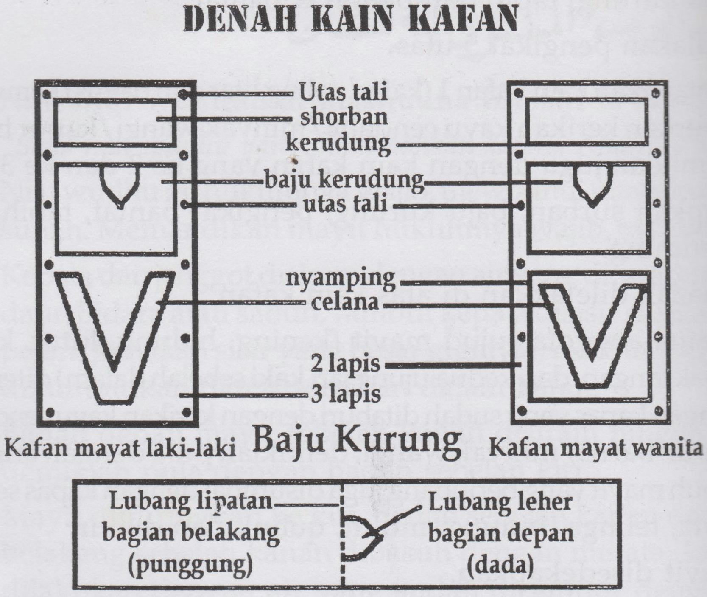
Denah Kain Kafan (Baju Kurung) untuk mayit laki-laki dan wanita
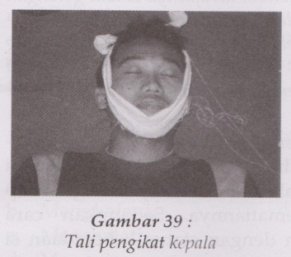
Gambar 39 — Tali pengikat kepala
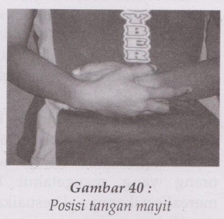
Gambar 40 — Posisi tangan mayit
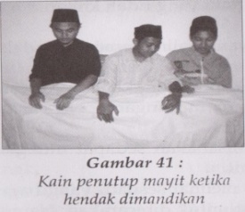
Gambar 41 — Kain penutup mayit ketika hendak dimandikan
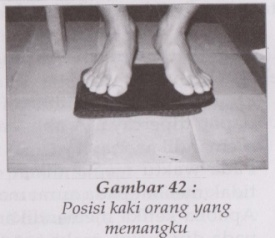
Gambar 42 — Posisi kaki orang yang memangku
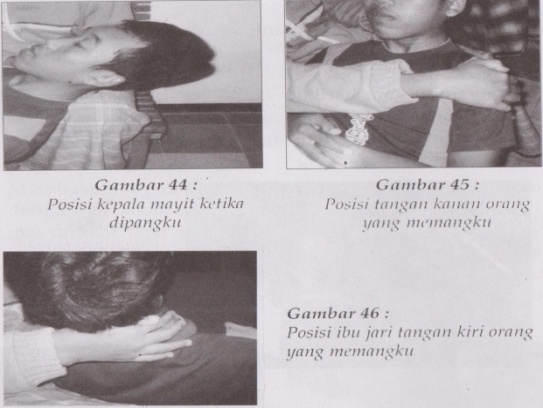
Gambar 44-46 — Posisi kepala mayit, tangan, dan ibu jari orang yang memangku
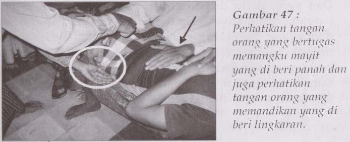
Gambar 47 — Tangan orang yang memangku (panah) dan tangan orang yang memandikan (lingkaran)
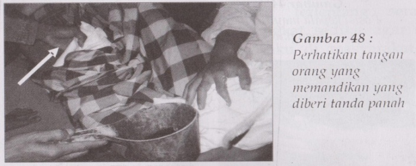
Gambar 48 — Tangan orang yang memandikan (tanda panah)
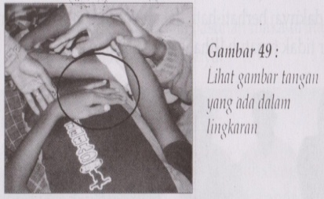
Gambar 49 — Posisi tangan dalam lingkaran
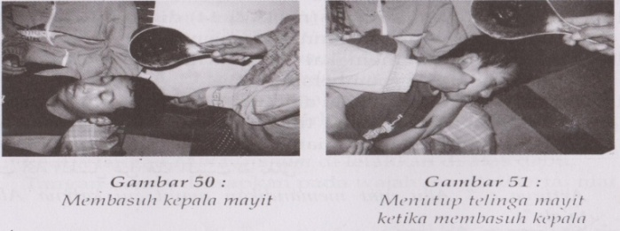
Gambar 50-51 — Membasuh kepala mayit dan menutup telinga ketika membasuh kepala
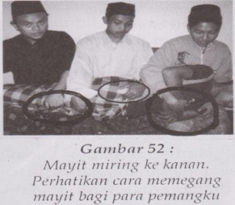
Gambar 52 — Mayit miring ke kanan; cara memegang mayit bagi para pemangku
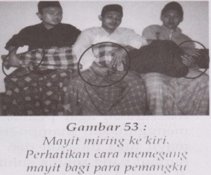
Gambar 53 — Mayit miring ke kiri; cara memegang mayit bagi para pemangku
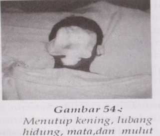
Gambar 54 — Menutup kening, lubang hidung, mata, dan mulut
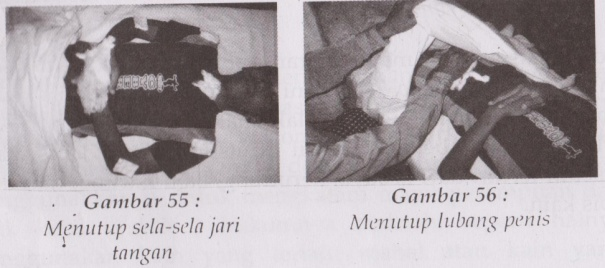
Gambar 55-56 — Menutup sela-sela jari tangan dan menutup lubang penis
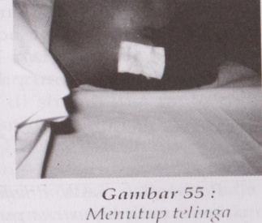
Gambar 55 — Menutup telinga
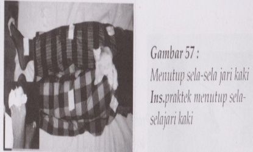
Gambar 57 — Menutup sela-sela jari kaki
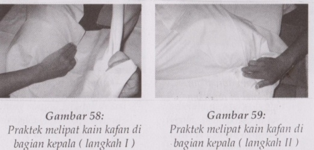
Gambar 58-59 — Praktik melipat kain kafan di bagian kepala (langkah I & II)
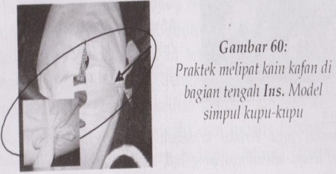
Gambar 60 — Praktik melipat kain kafan di bagian tengah (model simpul kupu-kupu)
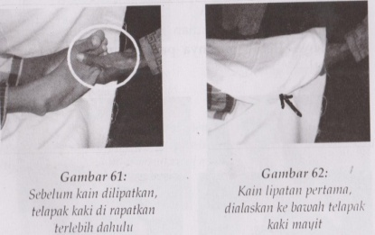
Gambar 61-62 — Telapak kaki dirapatkan sebelum dilipat; lipatan pertama
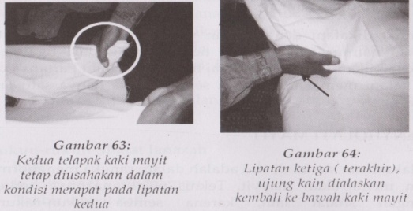
Gambar 63-64 — Kedua telapak kaki dirapatkan pada lipatan kedua; lipatan ketiga (terakhir)
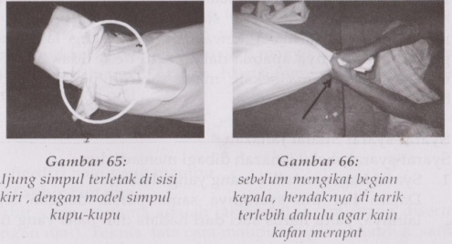
Gambar 65-66 — Simpul kupu-kupu di sisi kiri; menarik kain sebelum mengikat bagian kepala